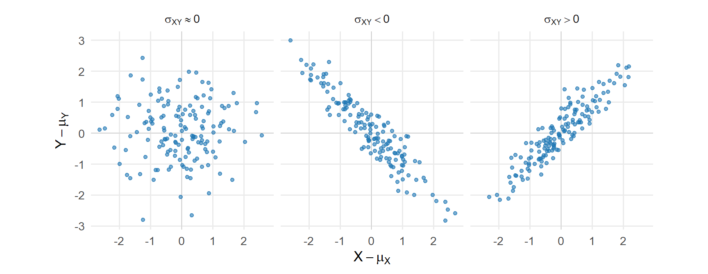
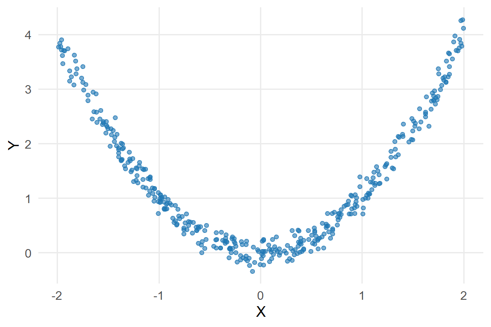
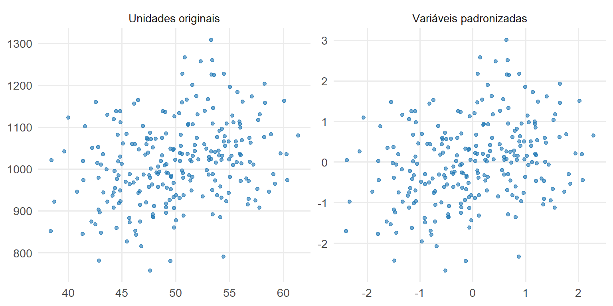
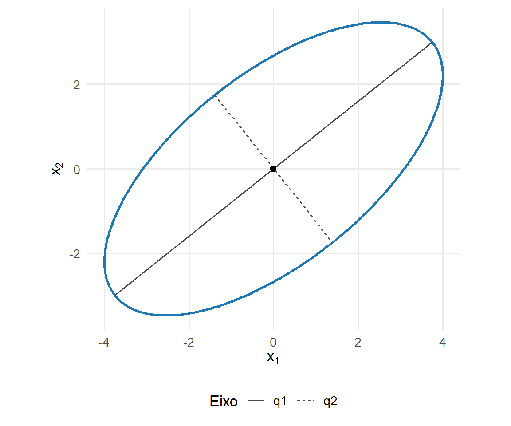
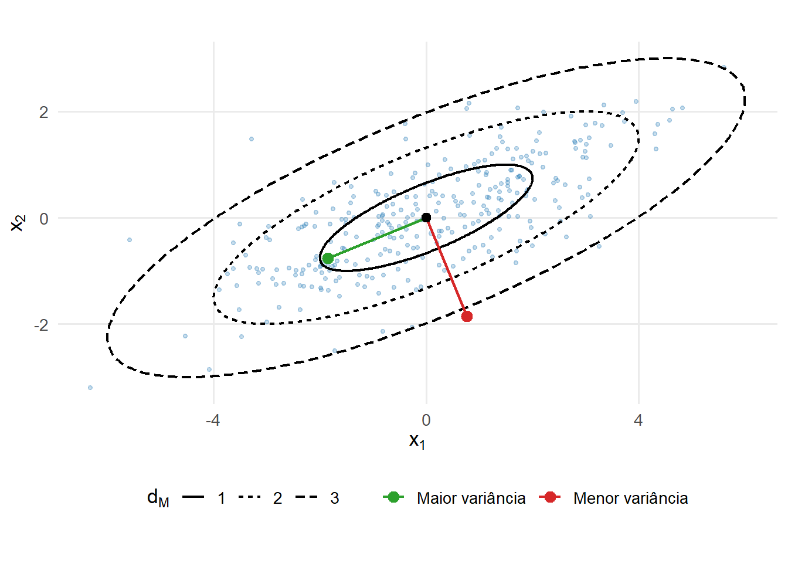

9 Matrizes de covariâncias e correlações
A variância descreve a dispersão de uma variável em torno de sua média. Quando várias variáveis são observadas conjuntamente, também é necessário representar como suas variações se relacionam. A análise separada das variâncias não registra se duas componentes tendem a aumentar juntas, se variam em sentidos opostos ou se apresentam redundância linear.
A matriz de covariâncias reúne as variâncias individuais e as covariâncias entre todos os pares de componentes de um vetor aleatório. Sua estrutura permite calcular a variância de combinações lineares, identificar relações lineares entre variáveis e definir uma geometria ajustada à dispersão da população (Johnson; Wichern, 2007).
A matriz de correlações resulta da padronização das variáveis. Ela expressa as associações lineares em uma escala adimensional, permitindo comparar variáveis originalmente medidas em unidades distintas.
O objetivo deste capítulo é desenvolver essas estruturas nos níveis populacional e descritivo amostral. As propriedades inferenciais das estatísticas amostrais serão estudadas no Capítulo 10, enquanto a distribuição normal multivariada, apresentada no próximo capítulo, permitirá atribuir interpretações probabilísticas adicionais aos objetos geométricos construídos aqui.
9.1 Momentos, centralização e covariância
9.1.1 Vetor de médias e centralização
Considere um vetor aleatório
\[ \boldsymbol{\mathsf X} = \begin{bmatrix} X_1\\ X_2\\ \vdots\\ X_p \end{bmatrix} \in \mathbb{R}^p. \]
Uma realização de \(\boldsymbol{\mathsf X}\) será representada por \(\mathbf{x}\in\mathbb{R}^p\). Uma coleção de \(n\) realizações observadas será posteriormente organizada em uma matriz de dados \(\mathbf{X}\in\mathbb{R}^{n\times p}\).
Admitindo que as esperanças das componentes existam, o vetor de médias populacional é
\[ \boldsymbol{\mu} = E \left( \boldsymbol{\mathsf X} \right) = \begin{bmatrix} E(X_1)\\ E(X_2)\\ \vdots\\ E(X_p) \end{bmatrix} = \begin{bmatrix} \mu_1\\ \mu_2\\ \vdots\\ \mu_p \end{bmatrix}. \]
O vetor \(\boldsymbol{\mu}\in\mathbb{R}^p\) representa a posição média da distribuição no espaço das observações.
A versão centralizada do vetor aleatório é definida por
\[ \boldsymbol{\mathsf X}_c = \boldsymbol{\mathsf X} - \boldsymbol{\mu}. \]
Pela linearidade da esperança,
\[ \begin{aligned} E \left( \boldsymbol{\mathsf X}_c \right) &= E \left( \boldsymbol{\mathsf X} - \boldsymbol{\mu} \right)\\ &= E \left( \boldsymbol{\mathsf X} \right) - \boldsymbol{\mu}\\ &= \mathbf{0}. \end{aligned} \]
A centralização desloca o centro da distribuição para a origem. Como o mesmo vetor é subtraído de todas as realizações, as diferenças entre pares de pontos permanecem inalteradas:
\[ \left( \mathbf{x}_i-\boldsymbol{\mu} \right) - \left( \mathbf{x}_j-\boldsymbol{\mu} \right) = \mathbf{x}_i-\mathbf{x}_j. \]
Consequentemente, a centralização modifica a posição da distribuição, mas preserva as distâncias entre suas realizações e sua estrutura de dispersão.
9.1.2 Momentos de segunda ordem
A análise das variâncias e covariâncias exige a existência de momentos de segunda ordem. Neste capítulo, assume-se que
\[ E(X_j^2) < \infty, \qquad j=1,\ldots,p. \]
Essa condição garante também a existência dos primeiros momentos, pois
\[ E(|X_j|) \leq \sqrt{ E(X_j^2) } < \infty. \]
Além disso, ela garante a existência dos produtos cruzados esperados.
Para quaisquer componentes \(X_j\) e \(X_k\), a desigualdade de Cauchy–Schwarz fornece
\[ E \left( |X_jX_k| \right) \leq \sqrt{ E(X_j^2) E(X_k^2) } < \infty. \]
A matriz de segundos momentos em relação à origem é
\[ \mathbf{M}_2 = E \left( \boldsymbol{\mathsf X} \boldsymbol{\mathsf X}^{\top} \right). \]
Como
\[ \boldsymbol{\mathsf X} \boldsymbol{\mathsf X}^{\top} \in \mathbb{R}^{p\times p}, \]
tem-se
\[ \mathbf{M}_2 \in \mathbb{R}^{p\times p}. \]
O produto externo presente nessa expressão é
\[ \boldsymbol{\mathsf X} \boldsymbol{\mathsf X}^{\top} = \begin{bmatrix} X_1^2 & X_1X_2 & \cdots & X_1X_p\\ X_2X_1 & X_2^2 & \cdots & X_2X_p\\ \vdots & \vdots & \ddots & \vdots\\ X_pX_1 & X_pX_2 & \cdots & X_p^2 \end{bmatrix}. \]
Portanto,
\[ \mathbf{M}_2 = \begin{bmatrix} E(X_1^2) & E(X_1X_2) & \cdots & E(X_1X_p)\\ E(X_2X_1) & E(X_2^2) & \cdots & E(X_2X_p)\\ \vdots & \vdots & \ddots & \vdots\\ E(X_pX_1) & E(X_pX_2) & \cdots & E(X_p^2) \end{bmatrix}. \]
A matriz \(\mathbf{M}_2\) utiliza a origem como referência. Por isso, seus elementos dependem simultaneamente da localização da distribuição e de sua variabilidade conjunta.
A dispersão em torno do vetor de médias é descrita pelo segundo momento central:
\[ \boldsymbol{\Sigma} = E \left[ \left( \boldsymbol{\mathsf X} - \boldsymbol{\mu} \right) \left( \boldsymbol{\mathsf X} - \boldsymbol{\mu} \right)^{\top} \right]. \]
Expandindo o produto,
\[ \begin{aligned} \boldsymbol{\Sigma} &= E \left[ \boldsymbol{\mathsf X} \boldsymbol{\mathsf X}^{\top} - \boldsymbol{\mathsf X} \boldsymbol{\mu}^{\top} - \boldsymbol{\mu} \boldsymbol{\mathsf X}^{\top} + \boldsymbol{\mu} \boldsymbol{\mu}^{\top} \right]\\ &= E \left( \boldsymbol{\mathsf X} \boldsymbol{\mathsf X}^{\top} \right) - E \left( \boldsymbol{\mathsf X} \right) \boldsymbol{\mu}^{\top} - \boldsymbol{\mu} E \left( \boldsymbol{\mathsf X} \right)^{\top} + \boldsymbol{\mu} \boldsymbol{\mu}^{\top}. \end{aligned} \]
Como \(E(\boldsymbol{\mathsf X})=\boldsymbol{\mu}\), segue que
\[ \boldsymbol{\Sigma} = \mathbf{M}_2 - \boldsymbol{\mu} \boldsymbol{\mu}^{\top}. \tag{9.1}\]
A identidade Equação eq-covariancia-segundo-momento generaliza a relação univariada
\[ \operatorname{Var}(X) = E(X^2) - [E(X)]^2. \]
A diferença entre \(\mathbf{M}_2\) e \(\boldsymbol{\Sigma}\) está no ponto utilizado como referência. A matriz \(\mathbf{M}_2\) mede produtos em relação à origem, enquanto \(\boldsymbol{\Sigma}\) mede a dispersão em relação à média.
Exemplo 9.1 (Matriz de segundos momentos e covariância) Considere
\[ \boldsymbol{\mu} = \begin{bmatrix} 2\\ 1 \end{bmatrix} \]
e
\[ \mathbf{M}_2 = \begin{bmatrix} 6 & 3\\ 3 & 3 \end{bmatrix}. \]
O produto externo do vetor de médias é
\[ \boldsymbol{\mu} \boldsymbol{\mu}^{\top} = \begin{bmatrix} 2\\ 1 \end{bmatrix} \begin{bmatrix} 2 & 1 \end{bmatrix} = \begin{bmatrix} 4 & 2\\ 2 & 1 \end{bmatrix}. \]
Pela identidade Equação eq-covariancia-segundo-momento,
\[ \begin{aligned} \boldsymbol{\Sigma} &= \mathbf{M}_2 - \boldsymbol{\mu} \boldsymbol{\mu}^{\top}\\ &= \begin{bmatrix} 6 & 3\\ 3 & 3 \end{bmatrix} - \begin{bmatrix} 4 & 2\\ 2 & 1 \end{bmatrix}\\ &= \begin{bmatrix} 2 & 1\\ 1 & 2 \end{bmatrix}. \end{aligned} \]
Os elementos diagonais representam as variâncias das duas componentes. Os elementos fora da diagonal registram sua covariância.
9.1.3 Covariância entre duas variáveis
Considere duas variáveis aleatórias \(X\) e \(Y\), definidas no mesmo espaço de probabilidade, com médias
\[ \mu_X = E(X) \qquad \text{e} \qquad \mu_Y = E(Y). \]
Definição 9.1 (Covariância populacional) Se \(E(X^2)<\infty\) e \(E(Y^2)<\infty\), a covariância populacional entre \(X\) e \(Y\) é
\[ \operatorname{Cov}(X,Y) = E \left[ (X-\mu_X) (Y-\mu_Y) \right]. \]
A covariância é a esperança do produto dos desvios das duas variáveis em relação às respectivas médias. Seu sinal descreve o sentido predominante da associação linear:
- uma covariância positiva ocorre quando desvios de mesmo sinal tendem a aparecer conjuntamente;
- uma covariância negativa ocorre quando desvios de sinais opostos tendem a aparecer conjuntamente;
- uma covariância nula indica que não há associação linear global detectada pela covariância.
A Figura Figura fig-covariancia-padroes apresenta três configurações com covariâncias positiva, aproximadamente nula e negativa.
O sinal da covariância resume o sentido da associação linear. Ele não descreve sozinho a intensidade da associação nem todas as características da distribuição conjunta.
Expandindo o produto dos desvios,
\[ \begin{aligned} \operatorname{Cov}(X,Y) &= E \left[ (X-\mu_X)(Y-\mu_Y) \right]\\ &= E \left( XY-\mu_XY-\mu_YX+\mu_X\mu_Y \right)\\ &= E(XY) - \mu_XE(Y) - \mu_YE(X) + \mu_X\mu_Y. \end{aligned} \]
Como \(E(X)=\mu_X\) e \(E(Y)=\mu_Y\),
\[ \operatorname{Cov}(X,Y) = E(XY) - E(X)E(Y). \tag{9.2}\]
A expressão Equação eq-covariancia-forma-expandida mostra que a covariância é a diferença entre o momento conjunto \(E(XY)\) e o produto dos momentos individuais.
Quando as duas variáveis coincidem,
\[ \operatorname{Cov}(X,X) = E \left[ (X-\mu_X)^2 \right] = \operatorname{Var}(X). \]
A covariância também é simétrica:
\[ \operatorname{Cov}(X,Y) = \operatorname{Cov}(Y,X). \]
Para constantes \(a\), \(b\), \(c\) e \(d\),
\[ \operatorname{Cov}(aX+b,cY+d) = ac\operatorname{Cov}(X,Y). \tag{9.3}\]
A identidade Equação eq-transformacao-covariancia-escalar mostra que translações não alteram a covariância. Mudanças de escala multiplicam a covariância pelo produto dos fatores aplicados às duas variáveis e podem também alterar seu sinal quando um dos fatores de escala é negativo.
Essa dependência das unidades impede a comparação direta entre covariâncias calculadas para pares de variáveis em escalas distintas. Se uma variável medida em metros for convertida para centímetros, sua covariância com qualquer outra variável será multiplicada por 100.
Pela desigualdade de Cauchy–Schwarz,
\[ \left| \operatorname{Cov}(X,Y) \right| \leq \sqrt{ \operatorname{Var}(X) \operatorname{Var}(Y) }. \tag{9.4}\]
O limite Equação eq-limite-covariancia será utilizado na definição da correlação, que remove o efeito das escalas individuais.
Exemplo 9.2 (Dependência não linear com covariância nula) Considere
\[ X \sim \operatorname{Uniforme}(-2,2) \]
e
\[ Y = X^2+\varepsilon, \]
em que \(\varepsilon\) é independente de \(X\) e possui média zero.
A simetria da distribuição de \(X\) em torno de zero implica
\[ E(X) = 0 \qquad \text{e} \qquad E(X^3) = 0. \]
Além disso,
\[ E(X\varepsilon) = E(X)E(\varepsilon) = 0. \]
Portanto,
\[ \begin{aligned} \operatorname{Cov}(X,Y) &= \operatorname{Cov} \left( X, X^2+\varepsilon \right)\\ &= E(X^3) + E(X\varepsilon) - E(X)E(Y)\\ &= 0. \end{aligned} \]
Apesar da covariância nula, \(X\) e \(Y\) não são independentes, pois
\[ E(Y\mid X=x) = x^2. \]
A Figura Figura fig-dependencia-covariancia-nula ilustra essa relação.

A configuração parabólica evidencia uma relação entre as variáveis que não é registrada pela covariância. Esse exemplo delimita a interpretação da covariância como medida de associação linear.
As variâncias das componentes e as covariâncias entre todos os pares de variáveis serão reunidas, na seção seguinte, em uma única matriz populacional.
9.2 Matriz de covariâncias populacional
9.2.1 Definição e interpretação dos elementos
A covariância entre duas variáveis pode ser estendida simultaneamente a todas as componentes de um vetor aleatório.
Definição 9.2 (Matriz de covariâncias populacional) Seja
\[ \boldsymbol{\mathsf X} = \begin{bmatrix} X_1\\ X_2\\ \vdots\\ X_p \end{bmatrix} \in \mathbb{R}^p, \]
com vetor de médias
\[ \boldsymbol{\mu} = E \left( \boldsymbol{\mathsf X} \right), \]
e suponha que \(E(X_j^2)<\infty\) para \(j=1,\ldots,p\). A matriz de covariâncias populacional de \(\boldsymbol{\mathsf X}\) é
\[ \boldsymbol{\Sigma} = \operatorname{Cov} \left( \boldsymbol{\mathsf X} \right) = E \left[ \left( \boldsymbol{\mathsf X} - \boldsymbol{\mu} \right) \left( \boldsymbol{\mathsf X} - \boldsymbol{\mu} \right)^{\top} \right]. \tag{9.5}\]
A matriz \(\boldsymbol{\Sigma}\) pertence a \(\mathbb{R}^{p\times p}\).
O vetor de desvios em relação à média é
\[ \boldsymbol{\mathsf X} - \boldsymbol{\mu} = \begin{bmatrix} X_1-\mu_1\\ X_2-\mu_2\\ \vdots\\ X_p-\mu_p \end{bmatrix}. \]
Seu produto externo \(\left(\boldsymbol{\mathsf X}-\boldsymbol{\mu}\right)\left(\boldsymbol{\mathsf X}-\boldsymbol{\mu}\right)^{\top}\) é
\[ \begin{bmatrix} (X_1-\mu_1)^2 & (X_1-\mu_1)(X_2-\mu_2) & \cdots & (X_1-\mu_1)(X_p-\mu_p) \\ (X_2-\mu_2)(X_1-\mu_1) & (X_2-\mu_2)^2 & \cdots & (X_2-\mu_2)(X_p-\mu_p) \\ \vdots & \vdots & \ddots & \vdots \\ (X_p-\mu_p)(X_1-\mu_1) & (X_p-\mu_p)(X_2-\mu_2) & \cdots & (X_p-\mu_p)^2 \end{bmatrix}. \]
Aplicando a esperança a cada elemento, obtém-se
\[ \boldsymbol{\Sigma} = \begin{bmatrix} \operatorname{Var}(X_1) & \operatorname{Cov}(X_1,X_2) & \cdots & \operatorname{Cov}(X_1,X_p) \\ \operatorname{Cov}(X_2,X_1) & \operatorname{Var}(X_2) & \cdots & \operatorname{Cov}(X_2,X_p) \\ \vdots & \vdots & \ddots & \vdots \\ \operatorname{Cov}(X_p,X_1) & \operatorname{Cov}(X_p,X_2) & \cdots & \operatorname{Var}(X_p) \end{bmatrix}. \tag{9.6}\]
O elemento situado na linha \(j\) e na coluna \(k\) é
\[ \sigma_{jk} = \operatorname{Cov}(X_j,X_k), \qquad j,k=1,\ldots,p. \]
Assim,
\[ \boldsymbol{\Sigma} = \left( \sigma_{jk} \right)_{p\times p}. \]
Os elementos da diagonal principal são as variâncias:
\[ \sigma_{jj} = \operatorname{Var}(X_j), \qquad j=1,\ldots,p. \]
Os elementos fora da diagonal são as covariâncias entre componentes distintas:
\[ \sigma_{jk} = \operatorname{Cov}(X_j,X_k), \qquad j\neq k. \]
A unidade de cada elemento depende das variáveis envolvidas. Se \(X_j\) é medida na unidade \(u_j\) e \(X_k\) na unidade \(u_k\), então
\[ \sigma_{jj} \quad \text{é medida em} \quad u_j^2, \]
enquanto
\[ \sigma_{jk} \quad \text{é medida em} \quad u_ju_k. \]
Essa dependência das unidades dificulta a comparação direta entre covariâncias de pares distintos de variáveis.
Como
\[ \operatorname{Cov}(X_j,X_k) = \operatorname{Cov}(X_k,X_j), \]
os elementos satisfazem
\[ \sigma_{jk} = \sigma_{kj}. \]
Portanto, a matriz é determinada por seus elementos diagonais e por uma de suas partes triangulares. Para \(p\) variáveis, existem
\[ p \]
variâncias e
\[ \frac{p(p-1)}{2} \]
covariâncias distintas. O número total de elementos distintos é
\[ p + \frac{p(p-1)}{2} = \frac{p(p+1)}{2}. \]
9.2.2 Variâncias e covariâncias de combinações lineares
Uma combinação linear das componentes de \(\boldsymbol{\mathsf X}\) é uma variável aleatória da forma
\[ Y = \mathbf{a}^{\top} \boldsymbol{\mathsf X}, \]
em que
\[ \mathbf{a} = \begin{bmatrix} a_1\\ a_2\\ \vdots\\ a_p \end{bmatrix} \in \mathbb{R}^p. \]
A combinação pode ser escrita como
\[ Y = a_1X_1 + a_2X_2 + \cdots + a_pX_p. \]
O vetor \(\mathbf a\) especifica os pesos atribuídos às componentes e define uma direção no espaço das variáveis.
Proposição 9.1 (Momentos de combinações lineares) Seja \(\boldsymbol{\mathsf X}\in\mathbb{R}^p\) um vetor aleatório com média \(\boldsymbol{\mu}\) e matriz de covariâncias \(\boldsymbol{\Sigma}\). Para quaisquer vetores fixos \(\mathbf a,\mathbf b\in\mathbb{R}^p\),
\[ E \left( \mathbf a^\top\boldsymbol{\mathsf X} \right) = \mathbf a^\top\boldsymbol{\mu}, \tag{9.7}\]
\[ \operatorname{Var} \left( \mathbf a^\top\boldsymbol{\mathsf X} \right) = \mathbf a^\top \boldsymbol{\Sigma} \mathbf a \tag{9.8}\]
e
\[ \operatorname{Cov} \left( \mathbf a^\top\boldsymbol{\mathsf X}, \mathbf b^\top\boldsymbol{\mathsf X} \right) = \mathbf a^\top \boldsymbol{\Sigma} \mathbf b. \tag{9.9}\]
Comprovação. Pela linearidade da esperança,
\[ E \left( \mathbf a^\top\boldsymbol{\mathsf X} \right) = \mathbf a^\top E \left( \boldsymbol{\mathsf X} \right) = \mathbf a^\top\boldsymbol{\mu}. \]
A variável centralizada correspondente é
\[ \mathbf a^\top\boldsymbol{\mathsf X} - \mathbf a^\top\boldsymbol{\mu} = \mathbf a^\top \left( \boldsymbol{\mathsf X} - \boldsymbol{\mu} \right). \]
Portanto,
\[ \begin{aligned} \operatorname{Var} \left( \mathbf a^\top\boldsymbol{\mathsf X} \right) &= E \left[ \left\{ \mathbf a^\top \left( \boldsymbol{\mathsf X} - \boldsymbol{\mu} \right) \right\}^2 \right]\\ &= E \left[ \mathbf a^\top \left( \boldsymbol{\mathsf X} - \boldsymbol{\mu} \right) \left( \boldsymbol{\mathsf X} - \boldsymbol{\mu} \right)^\top \mathbf a \right]\\ &= \mathbf a^\top E \left[ \left( \boldsymbol{\mathsf X} - \boldsymbol{\mu} \right) \left( \boldsymbol{\mathsf X} - \boldsymbol{\mu} \right)^\top \right] \mathbf a\\ &= \mathbf a^\top \boldsymbol{\Sigma} \mathbf a. \end{aligned} \]
De forma semelhante,
\[ \begin{aligned} & \operatorname{Cov} \left( \mathbf a^\top\boldsymbol{\mathsf X}, \mathbf b^\top\boldsymbol{\mathsf X} \right) \\ &= E \left[ \mathbf a^\top \left( \boldsymbol{\mathsf X} - \boldsymbol{\mu} \right) \left( \boldsymbol{\mathsf X} - \boldsymbol{\mu} \right)^\top \mathbf b \right] \\ &= \mathbf a^\top \boldsymbol{\Sigma} \mathbf b. \end{aligned} \]
A expressão Equação eq-variancia-combinacao-linear mostra que a matriz de covariâncias determina a variabilidade em qualquer direção definida por \(\mathbf a\).
Quando
\[ \|\mathbf a\| = 1, \]
a quantidade
\[ \mathbf a^\top \boldsymbol{\Sigma} \mathbf a \]
é a variância da projeção de \(\boldsymbol{\mathsf X}\) sobre a direção unitária \(\mathbf a\). Assim, a forma quadrática associada a \(\boldsymbol{\Sigma}\) descreve como a dispersão varia com a direção no espaço das variáveis.
Exemplo 9.3 (Matriz de covariâncias com três variáveis) Considere
\[ \boldsymbol{\mathsf X} = \begin{bmatrix} X_1\\ X_2\\ X_3 \end{bmatrix} \]
com matriz de covariâncias
\[ \boldsymbol{\Sigma} = \begin{bmatrix} 4 & 1.5 & -0.8\\ 1.5 & 9 & 0\\ -0.8 & 0 & 1 \end{bmatrix}. \]
As variâncias são
\[ \operatorname{Var}(X_1) = 4, \qquad \operatorname{Var}(X_2) = 9 \]
e
\[ \operatorname{Var}(X_3) = 1. \]
Os desvios-padrão correspondentes são
\[ \sigma_1 = 2, \qquad \sigma_2 = 3 \]
e
\[ \sigma_3 = 1. \]
As covariâncias distintas são
\[ \operatorname{Cov}(X_1,X_2) = 1.5, \]
\[ \operatorname{Cov}(X_1,X_3) = -0.8 \]
e
\[ \operatorname{Cov}(X_2,X_3) = 0. \]
Considere agora a combinação linear
\[ Y = X_1 + 0.5X_2 - X_3. \]
Seu vetor de coeficientes é
\[ \mathbf a = \begin{bmatrix} 1\\ 0.5\\ -1 \end{bmatrix}. \]
Pela expressão Equação eq-variancia-combinacao-linear,
\[ \begin{aligned} \operatorname{Var}(Y) &= \mathbf a^\top \boldsymbol{\Sigma} \mathbf a\\ &= \begin{bmatrix} 1 & 0.5 & -1 \end{bmatrix} \begin{bmatrix} 4 & 1.5 & -0.8\\ 1.5 & 9 & 0\\ -0.8 & 0 & 1 \end{bmatrix} \begin{bmatrix} 1\\ 0.5\\ -1 \end{bmatrix}\\ &= 10.35. \end{aligned} \]
A variância de \(Y\) incorpora as variâncias das três componentes e as covariâncias ponderadas pelos respectivos coeficientes. Em particular, a covariância negativa entre \(X_1\) e \(X_3\) contribui positivamente porque os coeficientes dessas duas variáveis possuem sinais opostos.
9.2.3 Propriedades estruturais
A matriz de covariâncias pertence à classe das matrizes simétricas positivas semidefinidas. Essa estrutura decorre diretamente de sua interpretação probabilística e da representação das variâncias das combinações lineares por formas quadráticas (Eaton, 2007).
Teorema 9.1 (Caracterização estrutural das matrizes de covariâncias) Uma matriz
\[ \mathbf{C} \in \mathbb{R}^{p\times p} \]
é a matriz de covariâncias de algum vetor aleatório com momentos de segunda ordem finitos se, e somente se,
\[ \mathbf{C} = \mathbf{C}^{\top} \]
e
\[ \mathbf{C} \succeq \mathbf{0}. \]
Consequentemente, toda matriz de covariâncias:
- possui elementos diagonais não negativos;
- possui autovalores reais e não negativos;
- possui todas as suas submatrizes principais positivas semidefinidas.
Comprovação. Suponha inicialmente que \(\mathbf{C}\) seja a matriz de covariâncias
\[ \mathbf{C} = \operatorname{Cov} \left( \boldsymbol{\mathsf X} \right) \]
de algum vetor aleatório \(\boldsymbol{\mathsf X}\in\mathbb{R}^p\).
A simetria decorre de
\[ \operatorname{Cov}(X_j,X_k) = \operatorname{Cov}(X_k,X_j), \]
de modo que
\[ \mathbf{C}^{\top} = \mathbf{C}. \]
Para qualquer
\[ \mathbf a \in \mathbb{R}^p, \]
tem-se
\[ \mathbf a^\top \mathbf{C} \mathbf a = \operatorname{Var} \left( \mathbf a^\top \boldsymbol{\mathsf X} \right) \geq 0. \]
Logo,
\[ \mathbf{C} \succeq \mathbf{0}. \]
Reciprocamente, suponha que
\[ \mathbf{C} = \mathbf{C}^{\top} \]
e
\[ \mathbf{C} \succeq \mathbf{0}. \]
Pela decomposição espectral, existe uma raiz quadrada simétrica positiva semidefinida
\[ \mathbf{C}^{1/2} \]
tal que
\[ \mathbf{C} = \mathbf{C}^{1/2} \mathbf{C}^{1/2}. \]
Considere um vetor aleatório
\[ \boldsymbol{\mathsf Z} \in \mathbb{R}^p \]
com
\[ E \left( \boldsymbol{\mathsf Z} \right) = \mathbf{0} \]
e
\[ \operatorname{Cov} \left( \boldsymbol{\mathsf Z} \right) = \mathbf{I}_p. \]
Defina
\[ \boldsymbol{\mathsf X} = \mathbf{C}^{1/2} \boldsymbol{\mathsf Z}. \]
Então,
\[ \begin{aligned} \operatorname{Cov} \left( \boldsymbol{\mathsf X} \right) &= \mathbf{C}^{1/2} \operatorname{Cov} \left( \boldsymbol{\mathsf Z} \right) \mathbf{C}^{1/2}\\ &= \mathbf{C}^{1/2} \mathbf{I}_p \mathbf{C}^{1/2}\\ &= \mathbf{C}. \end{aligned} \]
Portanto, toda matriz real simétrica positiva semidefinida pode ser realizada como matriz de covariâncias.
Os elementos diagonais são não negativos porque
\[ c_{jj} = \mathbf e_j^\top \mathbf{C} \mathbf e_j \geq 0. \]
Como \(\mathbf{C}\) é simétrica positiva semidefinida, seus autovalores são reais e não negativos.
Finalmente, toda submatriz principal corresponde à matriz de covariâncias de um subvetor das componentes de \(\boldsymbol{\mathsf X}\) e, portanto, também é positiva semidefinida.
A semidefinição positiva impõe restrições aos elementos da matriz. Para duas componentes \(X_j\) e \(X_k\), a submatriz principal
\[ \begin{bmatrix} \sigma_{jj} & \sigma_{jk}\\ \sigma_{jk} & \sigma_{kk} \end{bmatrix} \]
deve ser positiva semidefinida. Consequentemente,
\[ \sigma_{jj}\sigma_{kk} - \sigma_{jk}^2 \geq 0, \]
ou, de forma equivalente,
\[ |\sigma_{jk}| \leq \sqrt{ \sigma_{jj}\sigma_{kk} }. \]
Essa desigualdade coincide com o limite para a covariância apresentado em Equação eq-limite-covariancia.
A simetria, isoladamente, não é suficiente. Pelo Teorema thm-estrutura-matriz-covariancias, uma matriz real representa uma estrutura de covariâncias possível exatamente quando é simétrica e positiva semidefinida.
Exemplo 9.4 (Matriz simétrica que não pode ser uma matriz de covariâncias) Considere
\[ \mathbf A = \begin{bmatrix} 1 & 2\\ 2 & 1 \end{bmatrix}. \]
A matriz é simétrica, mas, para
\[ \mathbf a = \begin{bmatrix} 1\\ -1 \end{bmatrix}, \]
tem-se
\[ \begin{aligned} \mathbf a^\top \mathbf A \mathbf a &= \begin{bmatrix} 1 & -1 \end{bmatrix} \begin{bmatrix} 1 & 2\\ 2 & 1 \end{bmatrix} \begin{bmatrix} 1\\ -1 \end{bmatrix}\\ &= -2. \end{aligned} \]
Se \(\mathbf A\) fosse uma matriz de covariâncias, esse valor representaria a variância de \(X_1-X_2\), o que é impossível. Portanto, a simetria não é suficiente: a semidefinição positiva também é necessária.
Como \(\boldsymbol{\Sigma}\) é simétrica e positiva semidefinida, seus autovalores são reais e não negativos. Essa consequência será utilizada posteriormente para interpretar a dispersão da distribuição por meio da decomposição espectral.
9.2.4 Singularidade e dimensão efetiva
Uma matriz de covariâncias é positiva definida quando
\[ \mathbf a^\top \boldsymbol{\Sigma} \mathbf a > 0 \]
para todo
\[ \mathbf a \neq \mathbf{0}. \]
Pela Equação eq-variancia-combinacao-linear, isso equivale a exigir que nenhuma combinação linear associada a um vetor de coeficientes não nulo seja constante quase certamente.
Teorema 9.2 (Caracterização da singularidade) Seja \(\boldsymbol{\Sigma}\) a matriz de covariâncias de \(\boldsymbol{\mathsf X}\in\mathbb{R}^p\). As seguintes afirmações são equivalentes:
- \(\boldsymbol{\Sigma}\) é singular;
- existe \(\mathbf a\neq\mathbf{0}\) tal que \[ \mathbf a^\top \boldsymbol{\Sigma} \mathbf a = 0; \]
- existe \(\mathbf a\neq\mathbf{0}\) tal que \[ \operatorname{Var} \left( \mathbf a^\top \boldsymbol{\mathsf X} \right) = 0; \]
- existe \(\mathbf a\neq\mathbf{0}\) tal que \[ \mathbf a^\top \left( \boldsymbol{\mathsf X} - \boldsymbol{\mu} \right) = 0 \qquad \text{quase certamente}. \]
Comprovação. Como \(\boldsymbol{\Sigma}\) é simétrica e positiva semidefinida, ela é singular se, e somente se, possui um autovalor igual a zero. Nesse caso, existe \(\mathbf a\neq\mathbf{0}\) tal que
\[ \boldsymbol{\Sigma}\mathbf a = \mathbf{0}, \]
o que implica
\[ \mathbf a^\top \boldsymbol{\Sigma} \mathbf a = 0. \]
Reciprocamente, para uma matriz positiva semidefinida,
\[ \mathbf a^\top \boldsymbol{\Sigma} \mathbf a = 0 \]
implica que \(\mathbf a\) pertence ao núcleo de \(\boldsymbol{\Sigma}\), de modo que a matriz é singular.
Pela expressão Equação eq-variancia-combinacao-linear,
\[ \mathbf a^\top \boldsymbol{\Sigma} \mathbf a = \operatorname{Var} \left( \mathbf a^\top \boldsymbol{\mathsf X} \right). \]
Assim, as duas condições seguintes são equivalentes.
Por fim, uma variável aleatória possui variância zero se, e somente se, é constante quase certamente. Como
\[ E \left[ \mathbf a^\top \left( \boldsymbol{\mathsf X} - \boldsymbol{\mu} \right) \right] = 0, \]
essa constante deve ser igual a zero. Logo,
\[ \operatorname{Var} \left( \mathbf a^\top \boldsymbol{\mathsf X} \right) = 0 \]
se, e somente se,
\[ \mathbf a^\top \left( \boldsymbol{\mathsf X} - \boldsymbol{\mu} \right) = 0 \qquad \text{quase certamente}. \]
A última condição do Teorema thm-singularidade-matriz-covariancias pode ser escrita como
\[ \mathbf a^\top \boldsymbol{\mathsf X} = \mathbf a^\top \boldsymbol{\mu} \qquad \text{quase certamente}. \]
Portanto, a singularidade indica a existência de uma relação afim exata e não trivial entre as componentes de \(\boldsymbol{\mathsf X}\).
Equivalentemente, todo vetor
\[ \mathbf a \in \mathcal{N} \left( \boldsymbol{\Sigma} \right) \]
define uma direção de variância nula:
\[ \mathbf a^\top \left( \boldsymbol{\mathsf X} - \boldsymbol{\mu} \right) = 0 \qquad \text{quase certamente}. \]
Como \(\boldsymbol{\Sigma}\) é simétrica,
\[ \mathcal{N} \left( \boldsymbol{\Sigma} \right)^{\perp} = \mathcal{C} \left( \boldsymbol{\Sigma} \right). \]
Assim, o vetor centralizado satisfaz
\[ \boldsymbol{\mathsf X} - \boldsymbol{\mu} \in \mathcal{C} \left( \boldsymbol{\Sigma} \right) \qquad \text{quase certamente}. \] ::: {#exm-covariancia-singular}
9.3 Relação linear exata e singularidade
Suponha que
\[ X_3 = 2X_1-X_2 \]
quase certamente. Então,
\[ X_3 - 2X_1 + X_2 = 0. \]
Definindo
\[ \mathbf a = \begin{bmatrix} -2\\ 1\\ 1 \end{bmatrix}, \]
obtém-se
\[ \mathbf a^\top \boldsymbol{\mathsf X} = 0 \]
e, consequentemente,
\[ \operatorname{Var} \left( \mathbf a^\top \boldsymbol{\mathsf X} \right) = \mathbf a^\top \boldsymbol{\Sigma} \mathbf a = 0. \]
A matriz \(\boldsymbol{\Sigma}\) é singular porque uma de suas componentes é determinada exatamente pelas outras duas. Embora o vetor tenha três componentes, sua variabilidade está restrita a um subespaço linear de dimensão no máximo dois após a centralização. Equivalentemente, o vetor original está restrito a um subespaço afim de dimensão no máximo dois. :::
O posto de \(\boldsymbol{\Sigma}\) satisfaz
\[ 0 \leq \operatorname{posto} \left( \boldsymbol{\Sigma} \right) \leq p. \]
Quando
\[ \operatorname{posto} \left( \boldsymbol{\Sigma} \right) = p, \]
a matriz é positiva definida e a dispersão ocorre em todas as direções de \(\mathbb{R}^p\).
Quando
\[ \operatorname{posto} \left( \boldsymbol{\Sigma} \right) = r < p, \]
o espaço coluna
\[ \mathcal{C} \left( \boldsymbol{\Sigma} \right) \]
possui dimensão \(r\), e o vetor centralizado está quase certamente contido nesse subespaço.
Consequentemente,
\[ \boldsymbol{\mathsf X} \]
está quase certamente contido no subespaço afim
\[ \boldsymbol{\mu} + \mathcal{C} \left( \boldsymbol{\Sigma} \right). \]
As direções pertencentes a
\[ \mathcal{N} \left( \boldsymbol{\Sigma} \right) \]
são ortogonais a esse subespaço de dispersão e possuem variância nula.
A matriz de covariâncias também pode relacionar dois vetores aleatórios distintos. Essa extensão produzirá matrizes retangulares de covariâncias cruzadas e permitirá estudar a associação linear entre blocos de variáveis.
9.4 Covariâncias entre vetores e transformações
9.4.1 Aprofundamento: covariâncias cruzadas e vetores particionados
A covariância também pode relacionar componentes pertencentes a dois vetores aleatórios distintos. Considere
\[ \boldsymbol{\mathsf X} \in \mathbb{R}^p \qquad \text{e} \qquad \boldsymbol{\mathsf Y} \in \mathbb{R}^q, \]
com vetores de médias
\[ \boldsymbol{\mu}_X = E \left( \boldsymbol{\mathsf X} \right) \in \mathbb{R}^p \]
e
\[ \boldsymbol{\mu}_Y = E \left( \boldsymbol{\mathsf Y} \right) \in \mathbb{R}^q. \]
Admite-se que todas as componentes possuam momentos de segunda ordem finitos.
Definição 9.3 (Matriz de covariâncias cruzadas) A matriz de covariâncias cruzadas entre \(\boldsymbol{\mathsf X}\) e \(\boldsymbol{\mathsf Y}\) é
\[ \boldsymbol{\Sigma}_{XY} = \operatorname{Cov} \left( \boldsymbol{\mathsf X}, \boldsymbol{\mathsf Y} \right) = E \left[ \left( \boldsymbol{\mathsf X} - \boldsymbol{\mu}_X \right) \left( \boldsymbol{\mathsf Y} - \boldsymbol{\mu}_Y \right)^\top \right]. \tag{9.10}\]
A matriz \(\boldsymbol{\Sigma}_{XY}\) pertence a \(\mathbb{R}^{p\times q}\).
O elemento situado na linha \(j\) e na coluna \(k\) é
\[ \left( \boldsymbol{\Sigma}_{XY} \right)_{jk} = \operatorname{Cov} \left( X_j,Y_k \right), \]
para
\[ j=1,\ldots,p \qquad \text{e} \qquad k=1,\ldots,q. \]
Assim,
\[ \boldsymbol{\Sigma}_{XY} = \begin{bmatrix} \operatorname{Cov}(X_1,Y_1) & \cdots & \operatorname{Cov}(X_1,Y_q) \\ \vdots & \ddots & \vdots \\ \operatorname{Cov}(X_p,Y_1) & \cdots & \operatorname{Cov}(X_p,Y_q) \end{bmatrix}. \]
A ordem dos vetores determina a orientação da matriz. Invertendo essa ordem,
\[ \begin{aligned} \boldsymbol{\Sigma}_{YX} &= E \left[ \left( \boldsymbol{\mathsf Y} - \boldsymbol{\mu}_Y \right) \left( \boldsymbol{\mathsf X} - \boldsymbol{\mu}_X \right)^\top \right]\\ &= \boldsymbol{\Sigma}_{XY}^\top. \end{aligned} \tag{9.11}\]
A relação geral é
\[ \boldsymbol{\Sigma}_{YX} = \boldsymbol{\Sigma}_{XY}^{\top}. \]
Quando
\[ p\neq q, \]
as duas matrizes possuem dimensões diferentes, de modo que uma igualdade direta entre elas nem sequer é dimensionalmente possível. Mesmo quando
\[ p=q, \]
não se tem, em geral,
\[ \boldsymbol{\Sigma}_{XY} = \boldsymbol{\Sigma}_{YX}, \]
a menos que a matriz de covariâncias cruzadas seja simétrica.
Se
\[ U = \mathbf a^\top \boldsymbol{\mathsf X} \]
e
\[ V = \mathbf b^\top \boldsymbol{\mathsf Y}, \]
com
\[ \mathbf a\in\mathbb{R}^p \qquad \text{e} \qquad \mathbf b\in\mathbb{R}^q, \]
a covariância entre essas combinações lineares é determinada pela matriz de covariâncias cruzadas.
Proposição 9.2 (Covariância entre combinações de dois vetores) Para quaisquer vetores fixos \(\mathbf a\in\mathbb{R}^p\) e \(\mathbf b\in\mathbb{R}^q\),
\[ \operatorname{Cov} \left( \mathbf a^\top\boldsymbol{\mathsf X}, \mathbf b^\top\boldsymbol{\mathsf Y} \right) = \mathbf a^\top \boldsymbol{\Sigma}_{XY} \mathbf b. \tag{9.12}\]
Comprovação. As versões centralizadas das duas combinações são
\[ \mathbf a^\top \left( \boldsymbol{\mathsf X} - \boldsymbol{\mu}_X \right) \]
e
\[ \mathbf b^\top \left( \boldsymbol{\mathsf Y} - \boldsymbol{\mu}_Y \right). \]
Portanto,
\[ \begin{aligned} & \operatorname{Cov} \left( \mathbf a^\top\boldsymbol{\mathsf X}, \mathbf b^\top\boldsymbol{\mathsf Y} \right) \\ &= E \left[ \mathbf a^\top \left( \boldsymbol{\mathsf X} - \boldsymbol{\mu}_X \right) \left( \boldsymbol{\mathsf Y} - \boldsymbol{\mu}_Y \right)^\top \mathbf b \right] \\ &= \mathbf a^\top E \left[ \left( \boldsymbol{\mathsf X} - \boldsymbol{\mu}_X \right) \left( \boldsymbol{\mathsf Y} - \boldsymbol{\mu}_Y \right)^\top \right] \mathbf b \\ &= \mathbf a^\top \boldsymbol{\Sigma}_{XY} \mathbf b. \end{aligned} \]
Em particular,
\[ \boldsymbol{\Sigma}_{XY} = \mathbf{0} \]
se, e somente se,
\[ \operatorname{Cov} \left( \mathbf a^\top\boldsymbol{\mathsf X}, \mathbf b^\top\boldsymbol{\mathsf Y} \right) = 0 \]
para todos
\[ \mathbf a\in\mathbb{R}^{p} \qquad \text{e} \qquad \mathbf b\in\mathbb{R}^{q}. \]
Portanto, uma matriz de covariâncias cruzadas nula significa que nenhuma combinação linear de um bloco apresenta covariância não nula com uma combinação linear do outro bloco.
Essa condição não implica, em uma distribuição geral, independência entre os vetores aleatórios. A relação entre ausência de covariância e independência será retomada no capítulo sobre a distribuição normal multivariada.
A matriz \(\boldsymbol{\Sigma}_{XY}\) registra todas as covariâncias necessárias para calcular a associação linear entre combinações dos dois blocos. Essa estrutura será utilizada posteriormente no estudo de relações entre conjuntos de variáveis.
Os vetores podem ser reunidos em um único vetor particionado:
\[ \boldsymbol{\mathsf V} = \begin{bmatrix} \boldsymbol{\mathsf X}\\ \boldsymbol{\mathsf Y} \end{bmatrix} \in \mathbb{R}^{p+q}. \]
Seu vetor de médias é
\[ \boldsymbol{\mu}_V = \begin{bmatrix} \boldsymbol{\mu}_X\\ \boldsymbol{\mu}_Y \end{bmatrix}. \]
A matriz de covariâncias de \(\boldsymbol{\mathsf V}\) é
\[ \boldsymbol{\Sigma}_V = \operatorname{Cov} \left( \boldsymbol{\mathsf V} \right) = \begin{bmatrix} \boldsymbol{\Sigma}_{XX} & \boldsymbol{\Sigma}_{XY} \\ \boldsymbol{\Sigma}_{YX} & \boldsymbol{\Sigma}_{YY} \end{bmatrix}, \tag{9.13}\]
em que
\[ \boldsymbol{\Sigma}_{XX} = \operatorname{Cov} \left( \boldsymbol{\mathsf X} \right) \]
e
\[ \boldsymbol{\Sigma}_{YY} = \operatorname{Cov} \left( \boldsymbol{\mathsf Y} \right). \]
Os blocos diagonais descrevem a dispersão interna de cada vetor. Os blocos fora da diagonal descrevem as relações lineares entre suas componentes.
Como \(\boldsymbol{\Sigma}_V\) é uma matriz de covariâncias, ela é simétrica e positiva semidefinida. Essa propriedade impõe restrições conjuntas aos quatro blocos. Em particular, \(\boldsymbol{\Sigma}_{XY}\) não pode ser escolhida arbitrariamente depois de fixadas as matrizes \(\boldsymbol{\Sigma}_{XX}\) e \(\boldsymbol{\Sigma}_{YY}\).
Se
\[ \boldsymbol{\Sigma}_{YY} \succ \mathbf{0}, \]
o complemento de Schur correspondente ao bloco \(\boldsymbol{\Sigma}_{YY}\) é
\[ \boldsymbol{\Sigma}_{XX\cdot Y} = \boldsymbol{\Sigma}_{XX} - \boldsymbol{\Sigma}_{XY} \boldsymbol{\Sigma}_{YY}^{-1} \boldsymbol{\Sigma}_{YX}. \tag{9.14}\]
Esse objeto possui uma interpretação estatística direta.
Proposição 9.3 (Complemento de Schur e covariância residual) Considere os vetores centralizados
\[ \boldsymbol{\mathsf X}_c = \boldsymbol{\mathsf X} - \boldsymbol{\mu}_X \]
e
\[ \boldsymbol{\mathsf Y}_c = \boldsymbol{\mathsf Y} - \boldsymbol{\mu}_Y. \]
Para uma matriz
\[ \mathbf B \in \mathbb{R}^{p\times q}, \]
defina o resíduo linear
\[ \boldsymbol{\mathsf R}_{\mathbf B} = \boldsymbol{\mathsf X}_c - \mathbf B \boldsymbol{\mathsf Y}_c. \]
Se
\[ \boldsymbol{\Sigma}_{YY} \succ \mathbf{0}, \]
a escolha
\[ \mathbf B^{\star} = \boldsymbol{\Sigma}_{XY} \boldsymbol{\Sigma}_{YY}^{-1} \]
produz
\[ \operatorname{Cov} \left( \boldsymbol{\mathsf R}_{\mathbf B^{\star}} \right) = \boldsymbol{\Sigma}_{XX\cdot Y}. \]
Além disso, para qualquer \(\mathbf B\),
\[ \operatorname{Cov} \left( \boldsymbol{\mathsf R}_{\mathbf B} \right) - \boldsymbol{\Sigma}_{XX\cdot Y} \succeq \mathbf{0}. \]
Portanto, \(\mathbf B^{\star}\) fornece o melhor ajuste linear de \(\boldsymbol{\mathsf X}_c\) por \(\boldsymbol{\mathsf Y}_c\) no sentido de minimizar a covariância residual segundo a ordem de Loewner.
Comprovação. Para uma matriz arbitrária \(\mathbf B\),
\[ \begin{aligned} \operatorname{Cov} \left( \boldsymbol{\mathsf R}_{\mathbf B} \right) &= \operatorname{Cov} \left( \boldsymbol{\mathsf X}_c - \mathbf B \boldsymbol{\mathsf Y}_c \right)\\ &= \boldsymbol{\Sigma}_{XX} - \mathbf B \boldsymbol{\Sigma}_{YX} - \boldsymbol{\Sigma}_{XY} \mathbf B^{\top} + \mathbf B \boldsymbol{\Sigma}_{YY} \mathbf B^{\top}. \end{aligned} \]
Defina
\[ \mathbf B^{\star} = \boldsymbol{\Sigma}_{XY} \boldsymbol{\Sigma}_{YY}^{-1}. \]
Reorganizando a expressão anterior,
\[ \begin{aligned} \operatorname{Cov} \left( \boldsymbol{\mathsf R}_{\mathbf B} \right) &= \boldsymbol{\Sigma}_{XX} - \boldsymbol{\Sigma}_{XY} \boldsymbol{\Sigma}_{YY}^{-1} \boldsymbol{\Sigma}_{YX}\\ &\quad+ \left( \mathbf B - \mathbf B^{\star} \right) \boldsymbol{\Sigma}_{YY} \left( \mathbf B - \mathbf B^{\star} \right)^{\top}. \end{aligned} \]
Logo,
\[ \operatorname{Cov} \left( \boldsymbol{\mathsf R}_{\mathbf B} \right) = \boldsymbol{\Sigma}_{XX\cdot Y} + \left( \mathbf B - \mathbf B^{\star} \right) \boldsymbol{\Sigma}_{YY} \left( \mathbf B - \mathbf B^{\star} \right)^{\top}. \]
Como
\[ \boldsymbol{\Sigma}_{YY} \succ \mathbf{0}, \]
a segunda parcela é positiva semidefinida. Portanto,
\[ \operatorname{Cov} \left( \boldsymbol{\mathsf R}_{\mathbf B} \right) \succeq \boldsymbol{\Sigma}_{XX\cdot Y}, \]
com igualdade para
\[ \mathbf B = \mathbf B^{\star}. \]
Consequentemente,
\[ \boldsymbol{\Sigma}_{XX\cdot Y} \succeq \mathbf{0}. \]
Essa interpretação é puramente baseada em segundos momentos e não exige normalidade. Sob normalidade conjunta, o mesmo complemento de Schur também será identificado como a matriz de covariâncias da distribuição condicional de \(\boldsymbol{\mathsf X}\) dado \(\boldsymbol{\mathsf Y}\), resultado que será desenvolvido no Capítulo 9 (Harville, 1997).
Como
\[ \boldsymbol{\Sigma}_{XX\cdot Y} \succeq \mathbf{0}, \]
segue que
\[ \boldsymbol{\Sigma}_{XY} \boldsymbol{\Sigma}_{YY}^{-1} \boldsymbol{\Sigma}_{YX} \preceq \boldsymbol{\Sigma}_{XX}. \]
A parcela subtraída representa, portanto, a parte da dispersão de \(\boldsymbol{\mathsf X}\) que pode ser associada linearmente ao bloco \(\boldsymbol{\mathsf Y}\).
Exemplo 9.5 (Covariâncias entre dois blocos) Considere
\[ \boldsymbol{\mathsf X} = \begin{bmatrix} X_1\\ X_2 \end{bmatrix} \]
e
\[ \boldsymbol{\mathsf Y} = \begin{bmatrix} Y_1\\ Y_2\\ Y_3 \end{bmatrix}, \]
com matriz de covariâncias cruzadas
\[ \boldsymbol{\Sigma}_{XY} = \begin{bmatrix} 2 & -1 & 0.5\\ 1 & 3 & -2 \end{bmatrix}. \]
A primeira linha contém as covariâncias entre \(X_1\) e as três componentes de \(\boldsymbol{\mathsf Y}\). A segunda linha contém as covariâncias correspondentes a \(X_2\).
Considere as combinações
\[ U = X_1-2X_2 \]
e
\[ V = Y_1+Y_2. \]
Os vetores de coeficientes são
\[ \mathbf a = \begin{bmatrix} 1\\ -2 \end{bmatrix} \]
e
\[ \mathbf b = \begin{bmatrix} 1\\ 1\\ 0 \end{bmatrix}. \]
Pela expressão Equação eq-covariancia-combinacoes-blocos,
\[ \begin{aligned} \operatorname{Cov}(U,V) &= \mathbf a^\top \boldsymbol{\Sigma}_{XY} \mathbf b\\ &= \begin{bmatrix} 1 & -2 \end{bmatrix} \begin{bmatrix} 2 & -1 & 0.5\\ 1 & 3 & -2 \end{bmatrix} \begin{bmatrix} 1\\ 1\\ 0 \end{bmatrix}\\ &= -7. \end{aligned} \]
A covariância negativa resulta da combinação de todas as covariâncias entre as componentes utilizadas na construção de \(U\) e \(V\).
9.4.2 Transformação afim da média e da covariância
Considere uma transformação afim
\[ \boldsymbol{\mathsf Y} = \mathbf A \boldsymbol{\mathsf X} + \mathbf b, \]
em que
\[ \boldsymbol{\mathsf X} \in \mathbb{R}^p, \qquad \mathbf A \in \mathbb{R}^{q\times p} \]
e
\[ \mathbf b \in \mathbb{R}^q. \]
A transformação pode alterar a dimensão, a escala e a orientação do vetor aleatório. O vetor \(\mathbf b\) produz uma translação, enquanto a matriz \(\mathbf A\) determina a parte linear da transformação.
Proposição 9.4 (Média e covariância sob transformação afim) Se \(\boldsymbol{\mathsf X}\) possui média \(\boldsymbol{\mu}_X\) e matriz de covariâncias \(\boldsymbol{\Sigma}_{XX}\), então
\[ E \left( \mathbf A \boldsymbol{\mathsf X} + \mathbf b \right) = \mathbf A \boldsymbol{\mu}_X + \mathbf b \tag{9.15}\]
e
\[ \operatorname{Cov} \left( \mathbf A \boldsymbol{\mathsf X} + \mathbf b \right) = \mathbf A \boldsymbol{\Sigma}_{XX} \mathbf A^\top. \tag{9.16}\]
Comprovação. Pela linearidade da esperança,
\[ \begin{aligned} E \left( \mathbf A \boldsymbol{\mathsf X} + \mathbf b \right) &= \mathbf A E \left( \boldsymbol{\mathsf X} \right) + \mathbf b\\ &= \mathbf A \boldsymbol{\mu}_X + \mathbf b. \end{aligned} \]
A versão centralizada do vetor transformado é
\[ \begin{aligned} & \left( \mathbf A \boldsymbol{\mathsf X} + \mathbf b \right) - \left( \mathbf A \boldsymbol{\mu}_X + \mathbf b \right) \\ &= \mathbf A \left( \boldsymbol{\mathsf X} - \boldsymbol{\mu}_X \right). \end{aligned} \]
Assim,
\[ \begin{aligned} & \operatorname{Cov} \left( \mathbf A \boldsymbol{\mathsf X} + \mathbf b \right) \\ &= E \left[ \mathbf A \left( \boldsymbol{\mathsf X} - \boldsymbol{\mu}_X \right) \left( \boldsymbol{\mathsf X} - \boldsymbol{\mu}_X \right)^\top \mathbf A^\top \right] \\ &= \mathbf A E \left[ \left( \boldsymbol{\mathsf X} - \boldsymbol{\mu}_X \right) \left( \boldsymbol{\mathsf X} - \boldsymbol{\mu}_X \right)^\top \right] \mathbf A^\top \\ &= \mathbf A \boldsymbol{\Sigma}_{XX} \mathbf A^\top. \end{aligned} \]
A ausência de \(\mathbf b\) em Equação eq-covariancia-transformacao-afim confirma que translações não alteram a estrutura de covariâncias.
Se \(q=1\) e
\[ \mathbf A = \mathbf a^\top, \]
a expressão Equação eq-covariancia-transformacao-afim reduz-se a
\[ \operatorname{Var} \left( \mathbf a^\top \boldsymbol{\mathsf X} \right) = \mathbf a^\top \boldsymbol{\Sigma}_{XX} \mathbf a. \]
Portanto, a variância de uma combinação linear é um caso particular da transformação de uma matriz de covariâncias.
Se
\[ \mathbf A = \operatorname{diag} \left( c_1,\ldots,c_p \right), \]
cada componente é multiplicada por seu próprio fator de escala. A matriz transformada possui elementos
\[ \operatorname{Cov} \left( c_jX_j,c_kX_k \right) = c_jc_k\sigma_{jk}. \]
Em particular,
\[ \operatorname{Var} \left( c_jX_j \right) = c_j^2\sigma_{jj}. \]
Se
\[ \mathbf Q \in \mathbb{R}^{p\times p} \]
é ortogonal, então
\[ \operatorname{Cov} \left( \mathbf Q \boldsymbol{\mathsf X} \right) = \mathbf Q \boldsymbol{\Sigma}_{XX} \mathbf Q^\top. \]
Quando \(\mathbf Q\) atua ativamente sobre o vetor aleatório, a geometria da dispersão sofre uma rotação ou reflexão, sem alteração de comprimentos. Consequentemente, a matriz transformada possui os mesmos autovalores de \(\boldsymbol{\Sigma}_{XX}\) e preserva medidas espectrais de dispersão, como o traço e o determinante.
Se \(\mathbf P\) é uma matriz de projeção ortogonal, então
\[ \mathbf P^\top = \mathbf P \]
e
\[ \mathbf P^2 = \mathbf P. \]
Assim,
\[ \operatorname{Cov} \left( \mathbf P \boldsymbol{\mathsf X} \right) = \mathbf P \boldsymbol{\Sigma}_{XX} \mathbf P. \]
Essa matriz descreve a dispersão do vetor projetado.
Como a imagem de \(\mathbf P\) possui dimensão inferior a \(p\) quando a projeção é própria, a matriz resultante é singular no espaço original.
Exemplo 9.6 (Transformação de duas variáveis) Considere
\[ \boldsymbol{\Sigma}_{XX} = \begin{bmatrix} 4 & 2\\ 2 & 9 \end{bmatrix} \]
e a transformação
\[ \boldsymbol{\mathsf Y} = \mathbf A \boldsymbol{\mathsf X}, \]
com
\[ \mathbf A = \begin{bmatrix} 1 & 1\\ 1 & -1 \end{bmatrix}. \]
As novas componentes são
\[ Y_1 = X_1+X_2 \]
e
\[ Y_2 = X_1-X_2. \]
Pela expressão Equação eq-covariancia-transformacao-afim,
\[ \begin{aligned} \boldsymbol{\Sigma}_{YY} &= \mathbf A \boldsymbol{\Sigma}_{XX} \mathbf A^\top\\ &= \begin{bmatrix} 1 & 1\\ 1 & -1 \end{bmatrix} \begin{bmatrix} 4 & 2\\ 2 & 9 \end{bmatrix} \begin{bmatrix} 1 & 1\\ 1 & -1 \end{bmatrix}\\ &= \begin{bmatrix} 17 & -5\\ -5 & 9 \end{bmatrix}. \end{aligned} \]
Logo,
\[ \operatorname{Var}(Y_1) = 17, \]
\[ \operatorname{Var}(Y_2) = 9 \]
e
\[ \operatorname{Cov}(Y_1,Y_2) = -5. \]
A transformação altera as variâncias das componentes e a covariância entre elas.
Observe que a matriz
\[ \mathbf A = \begin{bmatrix} 1&1\\ 1&-1 \end{bmatrix} \]
não é ortogonal, pois
\[ \mathbf A^\top\mathbf A = 2\mathbf I_2. \]
Ela combina uma transformação ortogonal com uma mudança global de escala. Por isso, não preserva as variâncias totais na escala original.
9.4.3 Transformação das covariâncias cruzadas
Considere agora dois vetores transformados:
\[ \boldsymbol{\mathsf U} = \mathbf A \boldsymbol{\mathsf X} + \mathbf a \]
e
\[ \boldsymbol{\mathsf V} = \mathbf B \boldsymbol{\mathsf Y} + \mathbf b, \]
em que
\[ \mathbf A \in \mathbb{R}^{r\times p} \]
e
\[ \mathbf B \in \mathbb{R}^{s\times q}. \]
As translações não afetam a covariância cruzada.
Proposição 9.5 (Covariância cruzada sob transformações afins) Sob as condições anteriores,
\[ \operatorname{Cov} \left( \boldsymbol{\mathsf U}, \boldsymbol{\mathsf V} \right) = \mathbf A \boldsymbol{\Sigma}_{XY} \mathbf B^\top. \tag{9.17}\]
Comprovação. As versões centralizadas dos vetores transformados são
\[ \boldsymbol{\mathsf U} - E \left( \boldsymbol{\mathsf U} \right) = \mathbf A \left( \boldsymbol{\mathsf X} - \boldsymbol{\mu}_X \right) \]
e
\[ \boldsymbol{\mathsf V} - E \left( \boldsymbol{\mathsf V} \right) = \mathbf B \left( \boldsymbol{\mathsf Y} - \boldsymbol{\mu}_Y \right). \]
Portanto,
\[ \begin{aligned} & \operatorname{Cov} \left( \boldsymbol{\mathsf U}, \boldsymbol{\mathsf V} \right) \\ &= E \left[ \mathbf A \left( \boldsymbol{\mathsf X} - \boldsymbol{\mu}_X \right) \left( \boldsymbol{\mathsf Y} - \boldsymbol{\mu}_Y \right)^\top \mathbf B^\top \right] \\ &= \mathbf A \boldsymbol{\Sigma}_{XY} \mathbf B^\top. \end{aligned} \]
A expressão Equação eq-transformacao-covariancia-cruzada reúne várias propriedades escalares em uma única identidade. Tomando
\[ r=s=1, \]
recupera-se imediatamente a Equação eq-covariancia-combinacoes-blocos.
As transformações afins mostram como médias, variâncias e covariâncias respondem a mudanças de localização, escala e sistema de coordenadas. A padronização utiliza uma transformação diagonal específica para retirar as unidades de medida e produzir a matriz de correlações.
9.5 Padronização e matriz de correlações
9.5.1 Matriz de correlações populacional
As covariâncias dependem das unidades de medida das variáveis. Para retirar esse efeito, cada componente pode ser centralizada e dividida por seu desvio-padrão populacional.
Suponha que
\[ \sigma_j^2 = \operatorname{Var}(X_j) > 0, \qquad j=1,\ldots,p. \]
Defina a matriz diagonal de desvios-padrão por
\[ \mathbf D_{\sigma} = \operatorname{diag} \left( \sigma_1,\ldots,\sigma_p \right). \]
Como todas as variâncias são positivas, \(\mathbf D_{\sigma}\) é invertível.
Definição 9.4 (Vetor aleatório padronizado) O vetor aleatório padronizado correspondente a \(\boldsymbol{\mathsf X}\) é
\[ \boldsymbol{\mathsf Z} = \mathbf D_{\sigma}^{-1} \left( \boldsymbol{\mathsf X} - \boldsymbol{\mu} \right). \tag{9.18}\]
A componente \(j\) de \(\boldsymbol{\mathsf Z}\) é
\[ Z_j = \frac{ X_j-\mu_j }{ \sigma_j }. \]
Cada componente padronizada possui média zero:
\[ E(Z_j) = 0, \]
e variância unitária:
\[ \operatorname{Var}(Z_j) = 1. \] Equivalentemente,
\[ E \left( \boldsymbol{\mathsf Z} \right) = \mathbf{0}, \]
e todas as componentes de \(\boldsymbol{\mathsf Z}\) possuem variância unitária.
A padronização é uma transformação afim. Pela expressão Equação eq-covariancia-transformacao-afim,
\[ \begin{aligned} \operatorname{Cov} \left( \boldsymbol{\mathsf Z} \right) &= \operatorname{Cov} \left[ \mathbf D_{\sigma}^{-1} \left( \boldsymbol{\mathsf X} - \boldsymbol{\mu} \right) \right]\\ &= \mathbf D_{\sigma}^{-1} \boldsymbol{\Sigma} \mathbf D_{\sigma}^{-1}. \end{aligned} \]
Definição 9.5 (Matriz de correlações populacional) A matriz de correlações populacional de \(\boldsymbol{\mathsf X}\) é
\[ \boldsymbol{\mathcal R} = \operatorname{Cov} \left( \boldsymbol{\mathsf Z} \right) = \mathbf D_{\sigma}^{-1} \boldsymbol{\Sigma} \mathbf D_{\sigma}^{-1}. \tag{9.19}\]
A adoção de \(\boldsymbol{\mathcal R}\) para a matriz populacional preserva o símbolo \(\mathbf R\) para a matriz de correlações calculada a partir dos dados observados.
A matriz \(\boldsymbol{\mathcal R}\) pode ser escrita como
\[ \boldsymbol{\mathcal R} = \begin{bmatrix} 1 & \rho_{12} & \cdots & \rho_{1p} \\ \rho_{21} & 1 & \cdots & \rho_{2p} \\ \vdots & \vdots & \ddots & \vdots \\ \rho_{p1} & \rho_{p2} & \cdots & 1 \end{bmatrix}, \]
em que
\[ \rho_{jk} = \operatorname{Corr}(X_j,X_k) = \frac{ \sigma_{jk} }{ \sigma_j\sigma_k }. \tag{9.20}\]
A correlação é a covariância entre as versões padronizadas das duas variáveis:
\[ \rho_{jk} = \operatorname{Cov}(Z_j,Z_k). \]
Como o numerador e o denominador de Equação eq-correlacao-populacional possuem as mesmas unidades, \(\rho_{jk}\) é adimensional.
A relação Equação eq-matriz-correlacoes-populacional também pode ser invertida:
\[ \boldsymbol{\Sigma} = \mathbf D_{\sigma} \boldsymbol{\mathcal R} \mathbf D_{\sigma}. \tag{9.21}\]
Assim, a matriz de covariâncias pode ser representada a partir de dois componentes:
- \(\mathbf D_{\sigma}\) registra as escalas marginais das variáveis;
- \(\boldsymbol{\mathcal R}\) registra a estrutura de associação linear após a remoção dessas escalas.
A matriz de correlações não contém as variâncias originais. Portanto, \(\boldsymbol{\mathcal R}\) isoladamente não permite reconstruir \(\boldsymbol{\Sigma}\). Para isso, também é necessário conhecer os desvios-padrão populacionais.
9.5.2 Propriedades e limites
Teorema 9.3 (Caracterização das matrizes de correlações) Uma matriz
\[ \mathbf C \in \mathbb{R}^{p\times p} \]
é uma matriz de correlações de algum vetor aleatório cujas componentes possuem variâncias positivas se, e somente se,
\[ \mathbf C = \mathbf C^\top, \]
\[ \mathbf C \succeq \mathbf{0} \]
e
\[ c_{jj} = 1, \qquad j=1,\ldots,p. \]
Consequentemente, toda matriz de correlações:
- possui elementos no intervalo \([-1,1]\);
- possui autovalores reais e não negativos;
- possui traço igual a \(p\);
- é positiva definida se, e somente se, a matriz de covariâncias correspondente é positiva definida.
Comprovação. Suponha inicialmente que
\[ \mathbf C = \boldsymbol{\mathcal R} \]
seja a matriz de correlações de um vetor aleatório cujas componentes possuem variâncias positivas.
Como
\[ \boldsymbol{\mathcal R} = \mathbf D_{\sigma}^{-1} \boldsymbol{\Sigma} \mathbf D_{\sigma}^{-1}, \]
e \(\boldsymbol{\Sigma}\) é simétrica,
\[ \begin{aligned} \boldsymbol{\mathcal R}^{\top} &= \left( \mathbf D_{\sigma}^{-1} \boldsymbol{\Sigma} \mathbf D_{\sigma}^{-1} \right)^\top\\ &= \mathbf D_{\sigma}^{-1} \boldsymbol{\Sigma}^{\top} \mathbf D_{\sigma}^{-1}\\ &= \boldsymbol{\mathcal R}. \end{aligned} \]
Para qualquer
\[ \mathbf a \in \mathbb{R}^p, \]
tem-se
\[ \begin{aligned} \mathbf a^\top \boldsymbol{\mathcal R} \mathbf a &= \left( \mathbf D_{\sigma}^{-1}\mathbf a \right)^\top \boldsymbol{\Sigma} \left( \mathbf D_{\sigma}^{-1}\mathbf a \right)\\ &\geq 0. \end{aligned} \]
Logo,
\[ \boldsymbol{\mathcal R} \succeq \mathbf{0}. \]
Além disso,
\[ \rho_{jj} = \frac{\sigma_{jj}}{\sigma_j^2} = 1. \]
Reciprocamente, suponha que
\[ \mathbf C = \mathbf C^\top, \]
\[ \mathbf C \succeq \mathbf{0} \]
e
\[ c_{jj} = 1 \]
para todo \(j\).
Pelo Teorema thm-estrutura-matriz-covariancias, existe um vetor aleatório
\[ \boldsymbol{\mathsf Z} \in \mathbb{R}^p \]
tal que
\[ \operatorname{Cov} \left( \boldsymbol{\mathsf Z} \right) = \mathbf C. \]
Como a diagonal de \(\mathbf C\) é unitária,
\[ \operatorname{Var}(Z_j) = 1 \]
para toda componente. Portanto, a matriz de covariâncias de \(\boldsymbol{\mathsf Z}\) coincide com sua matriz de correlações, e \(\mathbf C\) é uma matriz de correlações válida.
Pela desigualdade de Cauchy–Schwarz,
\[ |c_{jk}| \leq \sqrt{c_{jj}c_{kk}} = 1. \]
Como \(\mathbf C\) é simétrica positiva semidefinida, seus autovalores são reais e não negativos. Além disso,
\[ \operatorname{tr}(\mathbf C) = \sum_{j=1}^{p}c_{jj} = p. \]
Finalmente, como \(\mathbf D_{\sigma}\) é invertível,
\[ \boldsymbol{\mathcal R} = \mathbf D_{\sigma}^{-1} \boldsymbol{\Sigma} \mathbf D_{\sigma}^{-1} \]
é uma transformação por congruência invertível. Portanto,
\[ \boldsymbol{\mathcal R} \succ \mathbf{0} \quad \Longleftrightarrow \quad \boldsymbol{\Sigma} \succ \mathbf{0}. \]
Os valores extremos da correlação possuem uma interpretação particularmente simples em termos das variáveis padronizadas.
Tem-se
\[ \rho_{jk} = 1 \]
se, e somente se,
\[ Z_k = Z_j \qquad \text{quase certamente}. \]
Equivalentemente,
\[ X_k-\mu_k = \frac{\sigma_k}{\sigma_j} \left( X_j-\mu_j \right) \qquad \text{quase certamente}. \]
Da mesma forma,
\[ \rho_{jk} = -1 \]
se, e somente se,
\[ Z_k = - Z_j \qquad \text{quase certamente}, \]
ou, equivalentemente,
\[ X_k-\mu_k = - \frac{\sigma_k}{\sigma_j} \left( X_j-\mu_j \right) \qquad \text{quase certamente}. \]
Assim, correlação de módulo igual a um corresponde a uma relação linear exata entre as duas variáveis. Em ambos os casos, o subvetor formado por \(X_j\) e \(X_k\) possui matriz de covariâncias e matriz de correlações singulares.
Pelo Teorema thm-propriedades-matriz-correlacoes, simetria e diagonal unitária não são suficientes. A semidefinição positiva é a condição adicional que garante a compatibilidade conjunta das correlações.
Exemplo 9.7 (Matriz com diagonal unitária que não é uma matriz de correlações) Considere
\[ \mathbf A = \begin{bmatrix} 1 & 0.9 & 0.9\\ 0.9 & 1 & -0.9\\ 0.9 & -0.9 & 1 \end{bmatrix}. \]
Todos os elementos estão no intervalo \([-1,1]\), e a diagonal é unitária. Entretanto,
\[ \det(\mathbf A) = -2.888 < 0. \]
Uma matriz positiva semidefinida não pode possuir determinante negativo. Portanto, \(\mathbf A\) não representa uma estrutura de correlações válida.
Esse exemplo mostra que correlações definidas par a par devem ser compatíveis com uma única estrutura conjunta.
9.5.3 Correlação nula e independência
Duas variáveis \(X_j\) e \(X_k\) são não correlacionadas quando
\[ \rho_{jk} = 0. \]
Como as variâncias são positivas, essa condição é equivalente a
\[ \sigma_{jk} = 0. \]
A correlação nula indica que não há associação linear global detectada pela correlação. Ela não implica independência em uma distribuição geral, conforme mostrou o Exemplo exm-dependencia-covariancia-nula.
Se \(X_j\) e \(X_k\) são independentes e possuem segundos momentos finitos, então
\[ E(X_jX_k) = E(X_j)E(X_k), \]
de modo que
\[ \operatorname{Cov}(X_j,X_k) = 0 \]
e
\[ \rho_{jk} = 0. \]
Portanto,
\[ \text{independência} \quad \Longrightarrow \quad \text{correlação nula}, \]
mas a recíproca exige hipóteses adicionais (Johnson; Wichern, 2007).
Como a diagonal de toda matriz de correlações é unitária, uma matriz de correlações diagonal necessariamente possui a forma
\[ \boldsymbol{\mathcal R} = \mathbf I_p. \]
Nesse caso, todas as componentes são duas a duas não correlacionadas. Essa condição, isoladamente, não garante independência conjunta.
9.5.4 Efeito das mudanças de escala
Considere a transformação componente a componente
\[ \boldsymbol{\mathsf Y} = \mathbf C \boldsymbol{\mathsf X} + \mathbf b, \]
em que
\[ \mathbf C = \operatorname{diag} \left( c_1,\ldots,c_p \right) \]
e todos os fatores \(c_j\) são não nulos.
A covariância entre duas componentes transformadas é
\[ \operatorname{Cov}(Y_j,Y_k) = c_jc_k\sigma_{jk}. \]
Os desvios-padrão transformados são
\[ \sigma_{Y_j} = |c_j|\sigma_j. \]
Portanto,
\[ \begin{aligned} \operatorname{Corr}(Y_j,Y_k) &= \frac{ c_jc_k\sigma_{jk} }{ |c_j|\sigma_j |c_k|\sigma_k }\\ &= \operatorname{sgn}(c_j) \operatorname{sgn}(c_k) \rho_{jk}. \end{aligned} \tag{9.22}\]
Se todos os fatores de escala são positivos,
\[ \operatorname{Corr}(Y_j,Y_k) = \rho_{jk}. \]
Assim, conversões usuais entre unidades de medida, como metros para centímetros ou quilogramas para gramas, não alteram as correlações.
Se uma das variáveis é multiplicada por uma constante negativa, o sinal de todas as suas correlações é invertido. A intensidade da associação linear permanece a mesma.
Em forma matricial, defina
\[ \mathbf S_c = \operatorname{diag} \left[ \operatorname{sgn}(c_1), \ldots, \operatorname{sgn}(c_p) \right]. \]
A matriz de correlações do vetor transformado é
\[ \boldsymbol{\mathcal R}_Y = \mathbf S_c \boldsymbol{\mathcal R}_X \mathbf S_c. \]
Como
\[ \mathbf S_c^\top = \mathbf S_c \]
e
\[ \mathbf S_c^2 = \mathbf I_p, \]
a matriz \(\mathbf S_c\) é ortogonal. Portanto,
\[ \boldsymbol{\mathcal R}_Y \]
e
\[ \boldsymbol{\mathcal R}_X \]
possuem os mesmos autovalores.
Assim, a inversão do sentido de uma ou mais variáveis altera os sinais de determinadas correlações, mas não altera o espectro da matriz de correlações nem os valores absolutos das associações par a par.
A translação determinada por \(\mathbf b\) não altera covariâncias nem correlações.
Em particular, a correlação é:
- invariante a translações;
- invariante a mudanças positivas de escala;
- sensível apenas ao sinal quando a orientação de uma variável é invertida.
A Figura Figura fig-efeito-padronizacao compara uma nuvem de dados em suas unidades originais com a mesma nuvem após a padronização marginal.

A padronização desloca o centro da nuvem para a origem e atribui variância unitária a cada coordenada. Como os fatores utilizados na divisão pelos desvios-padrão são estritamente positivos, as correlações entre as componentes são preservadas.
A padronização modifica, portanto, a geometria euclidiana da nuvem quando as variáveis possuem escalas diferentes, embora preserve sua estrutura de correlações.
Exemplo 9.8 (Conversão de covariâncias em correlações) Retome a matriz de covariâncias do Exemplo exm-matriz-covariancias-tres-variaveis:
\[ \boldsymbol{\Sigma} = \begin{bmatrix} 4 & 1.5 & -0.8\\ 1.5 & 9 & 0\\ -0.8 & 0 & 1 \end{bmatrix}. \]
A matriz de desvios-padrão é
\[ \mathbf D_{\sigma} = \begin{bmatrix} 2 & 0 & 0\\ 0 & 3 & 0\\ 0 & 0 & 1 \end{bmatrix}. \]
Pela expressão Equação eq-matriz-correlacoes-populacional,
\[ \begin{aligned} \boldsymbol{\mathcal R} &= \mathbf D_{\sigma}^{-1} \boldsymbol{\Sigma} \mathbf D_{\sigma}^{-1}\\ &= \begin{bmatrix} 1 & 0.25 & -0.4\\ 0.25 & 1 & 0\\ -0.4 & 0 & 1 \end{bmatrix}. \end{aligned} \]
Por exemplo,
\[ \rho_{12} = \frac{1.5}{2\cdot3} = 0.25 \]
e
\[ \rho_{13} = \frac{-0.8}{2\cdot1} = -0.4. \]
Embora
\[ |\sigma_{12}| > |\sigma_{13}|, \]
a associação padronizada entre \(X_1\) e \(X_3\) possui maior intensidade:
\[ |\rho_{13}| > |\rho_{12}|. \]
A diferença ocorre porque a covariância depende das escalas marginais, enquanto a correlação compara as associações após a padronização.
A escolha entre covariâncias e correlações corresponde à escolha entre duas geometrias de segunda ordem diferentes.
A matriz de covariâncias preserva as unidades de medida e as variâncias marginais originais. A matriz de correlações descreve a covariância do vetor marginalmente padronizado, no qual cada componente possui variância unitária.
Consequentemente, as duas matrizes podem produzir diferentes direções espectrais e diferentes avaliações da importância relativa das variáveis. As consequências geométricas da estrutura de covariâncias serão desenvolvidas na seção seguinte.
9.6 Geometria e medidas globais da dispersão
9.6.1 Eixos espectrais da covariância
A matriz de covariâncias associa a cada direção \(\mathbf a\in\mathbb{R}^p\) a variância
\[ \operatorname{Var} \left( \mathbf a^\top \boldsymbol{\mathsf X} \right) = \mathbf a^\top \boldsymbol{\Sigma} \mathbf a. \]
Quando \(\|\mathbf a\|=1\), essa expressão mede a dispersão do vetor aleatório ao longo da direção unitária \(\mathbf a\). Direções distintas podem apresentar variâncias distintas, mesmo quando as variâncias marginais das componentes são semelhantes.
Como \(\boldsymbol{\Sigma}\) é simétrica e positiva semidefinida, ela admite a decomposição espectral
\[ \boldsymbol{\Sigma} = \mathbf Q \boldsymbol{\Lambda} \mathbf Q^\top, \tag{9.23}\]
em que
\[ \mathbf Q = \begin{bmatrix} \mathbf q_1 & \mathbf q_2 & \cdots & \mathbf q_p \end{bmatrix} \]
é uma matriz ortogonal e
\[ \boldsymbol{\Lambda} = \operatorname{diag} \left( \lambda_1,\ldots,\lambda_p \right) \]
contém os autovalores não negativos de \(\boldsymbol{\Sigma}\).
Os autovetores podem ser escolhidos de modo que
\[ \mathbf q_j^\top \mathbf q_k = \begin{cases} 1, & j=k,\\ 0, & j\neq k. \end{cases} \]
A transformação ortogonal
\[ \boldsymbol{\mathsf Y} = \mathbf Q^\top \left( \boldsymbol{\mathsf X} - \boldsymbol{\mu} \right) \tag{9.24}\]
expressa o vetor centralizado no sistema de coordenadas determinado pelos autovetores de \(\boldsymbol{\Sigma}\).
Pela regra de transformação da covariância,
\[ \begin{aligned} \operatorname{Cov} \left( \boldsymbol{\mathsf Y} \right) &= \mathbf Q^\top \boldsymbol{\Sigma} \mathbf Q\\ &= \mathbf Q^\top \mathbf Q \boldsymbol{\Lambda} \mathbf Q^\top \mathbf Q\\ &= \boldsymbol{\Lambda}. \end{aligned} \tag{9.25}\]
Portanto, as componentes de \(\boldsymbol{\mathsf Y}\) são não correlacionadas e satisfazem
\[ \operatorname{Var}(Y_j) = \lambda_j. \]
Além disso,
\[ Y_j = \mathbf q_j^\top \left( \boldsymbol{\mathsf X} - \boldsymbol{\mu} \right), \]
de modo que cada componente de \(\boldsymbol{\mathsf Y}\) representa a projeção do vetor centralizado sobre um eixo espectral da covariância.
Os vetores \(\mathbf q_1,\ldots,\mathbf q_p\) serão denominados eixos espectrais da covariância. Cada autovalor \(\lambda_j\) quantifica a variância na direção \(\mathbf q_j\).
Se os autovalores são ordenados como
\[ \lambda_1 \geq \lambda_2 \geq \cdots \geq \lambda_p \geq 0, \]
então \(\mathbf q_1\) é uma direção de variância máxima entre os vetores unitários. Pelo Teorema thm-extremos-quociente-rayleigh,
\[ \lambda_p \leq \mathbf a^\top \boldsymbol{\Sigma} \mathbf a \leq \lambda_1, \qquad \|\mathbf a\|=1. \tag{9.26}\]
Os limites são alcançados nas direções dos autovetores associados aos autovalores extremos.
Neste capítulo, a decomposição espectral é utilizada exclusivamente para descrever a geometria de segunda ordem determinada por \(\boldsymbol{\Sigma}\). A formulação de uma técnica de redução de dimensionalidade baseada na seleção desses eixos será desenvolvida posteriormente no capítulo dedicado à Análise de Componentes Principais.
Exemplo 9.9 (Variâncias em eixos espectrais) Considere uma matriz de covariâncias com decomposição
\[ \boldsymbol{\Sigma} = \mathbf Q \begin{bmatrix} 9 & 0\\ 0 & 1 \end{bmatrix} \mathbf Q^\top, \]
em que \(\mathbf Q\) é ortogonal.
A variância ao longo de \(\mathbf q_1\) é
\[ \operatorname{Var} \left( \mathbf q_1^\top \boldsymbol{\mathsf X} \right) = 9, \]
enquanto a variância ao longo de \(\mathbf q_2\) é
\[ \operatorname{Var} \left( \mathbf q_2^\top \boldsymbol{\mathsf X} \right) = 1. \]
Os desvios-padrão nessas direções são, respectivamente,
\[ \sqrt{9} = 3 \]
e
\[ \sqrt{1} = 1. \]
A distribuição apresenta maior extensão ao longo de \(\mathbf q_1\). A razão entre as variâncias direcionais é 9, enquanto a razão entre as extensões medidas em desvios-padrão é 3.
Quando
\[ \boldsymbol{\Sigma} = \begin{bmatrix} \sigma_1^2 & 0 & \cdots & 0\\ 0 & \sigma_2^2 & \cdots & 0\\ \vdots & \vdots & \ddots & \vdots\\ 0 & 0 & \cdots & \sigma_p^2 \end{bmatrix}, \]
os eixos espectrais coincidem com os eixos coordenados. As componentes são não correlacionadas, e a dispersão ao longo do eixo \(j\) é \(\sigma_j^2\).
No caso particular
\[ \boldsymbol{\Sigma} = \sigma^2 \mathbf I_p, \tag{9.27}\]
todas as direções unitárias possuem a mesma variância:
\[ \mathbf a^\top \boldsymbol{\Sigma} \mathbf a = \sigma^2, \qquad \|\mathbf a\|=1. \]
A condição Equação eq-covariancia-isotropica descreve uma estrutura de segunda ordem isotrópica. Ela não implica, isoladamente, que toda a distribuição seja esfericamente simétrica.
9.6.2 Elipsoide associado à covariância
Suponha inicialmente que \(\boldsymbol{\Sigma}\) seja positiva definida. Para uma constante \(c>0\), considere o conjunto
\[ \mathcal E_c = \left\{ \mathbf x\in\mathbb{R}^p: (\mathbf x-\boldsymbol{\mu})^\top \boldsymbol{\Sigma}^{-1} (\mathbf x-\boldsymbol{\mu}) \leq c^2 \right\}. \tag{9.28}\]
Esse conjunto é um elipsoide centrado em \(\boldsymbol{\mu}\). Para identificar seus eixos e suas extensões, escreva
\[ \boldsymbol{\Sigma}^{-1} = \mathbf Q \boldsymbol{\Lambda}^{-1} \mathbf Q^\top \]
e defina
\[ \mathbf y = \mathbf Q^\top \left( \mathbf x-\boldsymbol{\mu} \right). \]
A condição que define o elipsoide torna-se
\[ \mathbf y^\top \boldsymbol{\Lambda}^{-1} \mathbf y \leq c^2, \]
ou
\[ \sum_{j=1}^p \frac{ y_j^2 }{ c^2\lambda_j } \leq 1. \tag{9.29}\]
A expressão Equação eq-elipsoide-coordenadas-espectrais mostra que:
- o centro do elipsoide é \(\boldsymbol{\mu}\);
- seus eixos possuem as direções \(\mathbf q_1,\ldots,\mathbf q_p\);
- o semieixo correspondente à direção \(\mathbf q_j\) possui comprimento \(c\sqrt{\lambda_j}\).
Autovalores maiores produzem maior extensão na direção correspondente, enquanto autovalores menores produzem menor extensão nessa direção.
A Figura Figura fig-elipsoide-covariancia representa uma matriz de covariâncias bidimensional, seus eixos espectrais e o contorno definido por \(c=2\).

A orientação da elipse é determinada pelos autovetores, enquanto suas extensões dependem das raízes quadradas dos autovalores. A matriz de covariâncias descreve, portanto, uma geometria de segunda ordem para a dispersão do vetor aleatório.
Se \(\boldsymbol{\Sigma}\) é singular, a expressão Equação eq-elipsoide-covariancia não pode ser utilizada diretamente, pois \(\boldsymbol{\Sigma}^{-1}\) não existe. Nesse caso, o elipsoide degenerado associado à covariância pode ser definido como
\[ \mathcal E_c^{(r)} = \left\{ \boldsymbol{\mu} + \boldsymbol{\Sigma}^{1/2} \mathbf u : \|\mathbf u\| \leq c \right\}. \tag{9.30}\]
Se
\[ r = \operatorname{posto} \left( \boldsymbol{\Sigma} \right), \]
o conjunto \(\mathcal E_c^{(r)}\) está contido no subespaço afim
\[ \boldsymbol{\mu} + \mathcal C \left( \boldsymbol{\Sigma} \right), \]
de dimensão \(r\). Seus semieixos não nulos possuem direções dadas pelos autovetores associados aos autovalores positivos e comprimentos
\[ c\sqrt{\lambda_j}. \]
Uma representação equivalente utiliza a pseudoinversa:
\[ \mathcal E_c^{(r)} = \left\{ \mathbf x \in \mathbb{R}^p : \mathbf x-\boldsymbol{\mu} \in \mathcal C \left( \boldsymbol{\Sigma} \right), \quad \left( \mathbf x-\boldsymbol{\mu} \right)^\top \boldsymbol{\Sigma}^{+} \left( \mathbf x-\boldsymbol{\mu} \right) \leq c^2 \right\}. \tag{9.31}\]
A restrição ao espaço coluna é necessária. Sem ela, a forma quadrática baseada na pseudoinversa não distingue deslocamentos pertencentes ao núcleo de \(\boldsymbol{\Sigma}\) (Eaton, 2007).
9.6.3 Variância total e variância generalizada
Uma matriz de covariâncias contém várias variâncias e covariâncias. Algumas funções escalares da matriz resumem aspectos específicos da dispersão, mas nenhuma delas preserva toda a informação contida em \(\boldsymbol{\Sigma}\).
Definição 9.6 (Variância total) A variância total de um vetor aleatório \(\boldsymbol{\mathsf X}\in\mathbb{R}^p\) é
\[ \operatorname{VT} \left( \boldsymbol{\mathsf X} \right) = \operatorname{tr} \left( \boldsymbol{\Sigma} \right). \tag{9.32}\]
Como o traço é a soma dos elementos diagonais,
\[ \operatorname{tr} \left( \boldsymbol{\Sigma} \right) = \sum_{j=1}^p \operatorname{Var}(X_j). \tag{9.33}\]
Pela decomposição espectral,
\[ \operatorname{tr} \left( \boldsymbol{\Sigma} \right) = \sum_{j=1}^p \lambda_j. \tag{9.34}\]
A variância total pode ser interpretada de três maneiras equivalentes:
- soma das variâncias marginais;
- soma das variâncias nos eixos espectrais;
- esperança do quadrado da distância euclidiana ao vetor de médias.
A terceira interpretação decorre de
\[ \begin{aligned} E \left[ \left\| \boldsymbol{\mathsf X} - \boldsymbol{\mu} \right\|^2 \right] &= E \left[ \left( \boldsymbol{\mathsf X} - \boldsymbol{\mu} \right)^\top \left( \boldsymbol{\mathsf X} - \boldsymbol{\mu} \right) \right]\\ &= E \left[ \operatorname{tr} \left\{ \left( \boldsymbol{\mathsf X} - \boldsymbol{\mu} \right) \left( \boldsymbol{\mathsf X} - \boldsymbol{\mu} \right)^\top \right\} \right]\\ &= \operatorname{tr} \left( \boldsymbol{\Sigma} \right). \end{aligned} \tag{9.35}\]
Definição 9.7 (Variância média) A variância média de \(\boldsymbol{\mathsf X}\) é
\[ \operatorname{VM} \left( \boldsymbol{\mathsf X} \right) = \frac{1}{p} \operatorname{tr} \left( \boldsymbol{\Sigma} \right). \]
Essa quantidade representa a média aritmética das variâncias marginais ou, de forma equivalente, a média dos autovalores:
\[ \operatorname{VM} \left( \boldsymbol{\mathsf X} \right) = \frac1p \sum_{j=1}^{p} \lambda_j. \] A variância total depende das escalas das variáveis. Componentes medidas em unidades numericamente maiores podem dominar a soma.
Definição 9.8 (Variância generalizada) A variância generalizada de \(\boldsymbol{\mathsf X}\) é
\[ \operatorname{VG} \left( \boldsymbol{\mathsf X} \right) = \det \left( \boldsymbol{\Sigma} \right). \tag{9.36}\]
Como o determinante é o produto dos autovalores,
\[ \det \left( \boldsymbol{\Sigma} \right) = \prod_{j=1}^p \lambda_j. \tag{9.37}\]
A utilização de \(\det(\boldsymbol{\Sigma})\) como medida escalar da dispersão multivariada é denominada variância generalizada (Johnson; Wichern, 2007).
A variância generalizada reúne multiplicativamente as variâncias nos eixos espectrais. Por depender do produto dos autovalores, ela é particularmente sensível à existência de direções com dispersão pequena ou nula.
Se qualquer autovalor é zero, então
\[ \det \left( \boldsymbol{\Sigma} \right) = 0. \]
Portanto, a variância generalizada é nula quando a dispersão está restrita a um subespaço de dimensão inferior a \(p\).
Como \(\boldsymbol{\Sigma}\) é positiva semidefinida,
\[ \det \left( \boldsymbol{\Sigma} \right) \geq 0. \]
Além disso,
\[ \operatorname{VG} \left( \boldsymbol{\mathsf X} \right) > 0 \]
se, e somente se,
\[ \boldsymbol{\Sigma} \succ \mathbf{0}. \]
A variância generalizada não é o volume do elipsoide. Ela participa da expressão desse volume por meio de sua raiz quadrada.
Proposição 9.6 (Volume do elipsoide de covariância) Se
\[ \boldsymbol{\Sigma} \succ \mathbf{0}, \]
o volume do elipsoide \(\mathcal E_c\) definido em Equação eq-elipsoide-covariancia é
\[ \operatorname{Vol} \left( \mathcal E_c \right) = \kappa_p c^p \det \left( \boldsymbol{\Sigma} \right)^{1/2}, \tag{9.38}\]
em que
\[ \kappa_p = \frac{ \pi^{p/2} }{ \Gamma \left( p/2+1 \right) } \]
é o volume da esfera unitária de \(\mathbb{R}^p\).
Comprovação. O elipsoide pode ser escrito como a imagem da esfera
\[ \mathcal B_c = \left\{ \mathbf u\in\mathbb{R}^p: \|\mathbf u\|\leq c \right\} \]
pela transformação afim
\[ \mathbf x = \boldsymbol{\mu} + \boldsymbol{\Sigma}^{1/2} \mathbf u. \]
A translação por \(\boldsymbol{\mu}\) não altera volumes. O fator de alteração de volume da transformação linear é
\[ \left| \det \left( \boldsymbol{\Sigma}^{1/2} \right) \right| = \det \left( \boldsymbol{\Sigma} \right)^{1/2}. \]
Como
\[ \operatorname{Vol} \left( \mathcal B_c \right) = \kappa_p c^p, \]
segue que
\[ \operatorname{Vol} \left( \mathcal E_c \right) = \kappa_p c^p \det \left( \boldsymbol{\Sigma} \right)^{1/2}. \]
Assim,
\[ \det \left( \boldsymbol{\Sigma} \right)^{1/2} \]
é o fator de escala de volume associado à transformação da esfera no elipsoide de covariância.
Exemplo 9.10 (Comparação entre variância total e variância generalizada) Considere duas matrizes diagonais:
\[ \boldsymbol{\Sigma}_1 = \begin{bmatrix} 4 & 0\\ 0 & 4 \end{bmatrix} \]
e
\[ \boldsymbol{\Sigma}_2 = \begin{bmatrix} 7 & 0\\ 0 & 1 \end{bmatrix}. \]
As duas matrizes possuem a mesma variância total:
\[ \operatorname{tr} \left( \boldsymbol{\Sigma}_1 \right) = 8 \]
e
\[ \operatorname{tr} \left( \boldsymbol{\Sigma}_2 \right) = 8. \]
Entretanto,
\[ \det \left( \boldsymbol{\Sigma}_1 \right) = 16, \]
enquanto
\[ \det \left( \boldsymbol{\Sigma}_2 \right) = 7. \]
A primeira matriz distribui a variabilidade igualmente entre as duas direções. A segunda concentra maior variabilidade em um eixo e menor variabilidade no outro.
A variância total registra a soma das dispersões direcionais, mas não distingue essas duas configurações. A variância generalizada é menor na configuração mais alongada porque depende do produto das dispersões nos eixos.
9.6.4 Unidades e efeito das transformações
Se as componentes de \(\boldsymbol{\mathsf X}\) possuem unidades
\[ u_1,\ldots,u_p, \]
a variância generalizada possui unidade
\[ u_1^2u_2^2\cdots u_p^2. \]
Sua raiz quadrada possui unidade
\[ u_1u_2\cdots u_p, \]
compatível com uma medida de volume no espaço das variáveis.
A soma de variâncias que compõe \(\operatorname{tr}(\boldsymbol{\Sigma})\) também exige cautela quando as variáveis possuem unidades diferentes. Embora o cálculo seja definido, a soma pode não ter uma interpretação física simples.
Considere uma transformação linear quadrada
\[ \boldsymbol{\mathsf Y} = \mathbf A \boldsymbol{\mathsf X}, \]
com
\[ \mathbf A \in \mathbb{R}^{p\times p}. \]
A matriz de covariâncias transformada é
\[ \boldsymbol{\Sigma}_{YY} = \mathbf A \boldsymbol{\Sigma}_{XX} \mathbf A^\top. \]
Como \(\mathbf A\) é quadrada,
\[ \begin{aligned} \det \left( \boldsymbol{\Sigma}_{YY} \right) &= \det \left( \mathbf A \boldsymbol{\Sigma}_{XX} \mathbf A^\top \right)\\ &= \det(\mathbf A) \det \left( \boldsymbol{\Sigma}_{XX} \right) \det \left( \mathbf A^\top \right)\\ &= \det(\mathbf A)^2 \det \left( \boldsymbol{\Sigma}_{XX} \right). \end{aligned} \tag{9.39}\]
Consequentemente,
\[ \det \left( \boldsymbol{\Sigma}_{YY} \right)^{1/2} = |\det(\mathbf A)| \det \left( \boldsymbol{\Sigma}_{XX} \right)^{1/2}. \tag{9.40}\]
Se \(\mathbf A\) é singular, então
\[ \det(\mathbf A) = 0 \]
e, consequentemente,
\[ \det \left( \boldsymbol{\Sigma}_{YY} \right) = 0. \]
Nesse caso, a transformação reduz a dimensão efetiva da dispersão no espaço de saída.
A expressão Equação eq-raiz-variancia-generalizada-transformacao coincide com a alteração de volume produzida por uma transformação linear.
Se \(\mathbf Q\) é ortogonal,
\[ |\det(\mathbf Q)| = 1. \]
Logo,
\[ \det \left( \mathbf Q \boldsymbol{\Sigma} \mathbf Q^\top \right) = \det \left( \boldsymbol{\Sigma} \right). \]
A variância total também é preservada por transformações ortogonais:
\[ \begin{aligned} \operatorname{tr} \left( \mathbf Q \boldsymbol{\Sigma} \mathbf Q^\top \right) &= \operatorname{tr} \left( \mathbf Q^\top \mathbf Q \boldsymbol{\Sigma} \right)\\ &= \operatorname{tr} \left( \boldsymbol{\Sigma} \right). \end{aligned} \]
Portanto, transformações ortogonais podem alterar a orientação do elipsoide no sistema de coordenadas, mas preservam seus autovalores e, consequentemente, a variância total, a variância generalizada e os comprimentos de seus semieixos.
Transformações gerais de escala modificam essas medidas. A comparação entre valores de variância total ou variância generalizada exige, por isso, que as variáveis estejam expressas em escalas compatíveis ou que o efeito das unidades seja considerado explicitamente.
A forma quadrática que define o elipsoide também fornece uma medida de separação adaptada à matriz de covariâncias. Essa construção conduz à distância de Mahalanobis.
9.7 Distância de Mahalanobis
A distância euclidiana entre uma observação \(\mathbf x\in\mathbb{R}^p\) e o vetor de médias \(\boldsymbol{\mu}\) é
\[ d_E \left( \mathbf x, \boldsymbol{\mu} \right) = \left\| \mathbf x-\boldsymbol{\mu} \right\| = \sqrt{ \left( \mathbf x-\boldsymbol{\mu} \right)^\top \left( \mathbf x-\boldsymbol{\mu} \right) }. \]
Essa distância utiliza a geometria euclidiana original. Todas as coordenadas recebem o mesmo peso, independentemente de suas variâncias e das covariâncias existentes entre as variáveis.
No caso univariado, o afastamento entre um valor \(x\) e a média \(\mu\) pode ser ajustado pelo desvio-padrão:
\[ \frac{|x-\mu|}{\sigma}. \]
A distância de Mahalanobis estende essa padronização ao espaço multivariado por meio da matriz de covariâncias completa, ajustando simultaneamente as escalas marginais e as associações lineares entre as componentes (Mardia; Kent; Taylor, 2024).
9.7.1 Definição e interpretação espectral
Considere um vetor aleatório \(\boldsymbol{\mathsf X}\in\mathbb{R}^p\), com vetor de médias \(\boldsymbol{\mu}\) e matriz de covariâncias positiva definida:
\[ \boldsymbol{\Sigma} \succ \mathbf{0}. \]
Definição 9.9 (Distância de Mahalanobis) A distância de Mahalanobis entre dois pontos \(\mathbf x,\mathbf y\in\mathbb{R}^p\), em relação à matriz de covariâncias \(\boldsymbol{\Sigma}\), é
\[ d_M \left( \mathbf x, \mathbf y; \boldsymbol{\Sigma} \right) = \sqrt{ \left( \mathbf x-\mathbf y \right)^\top \boldsymbol{\Sigma}^{-1} \left( \mathbf x-\mathbf y \right) }. \tag{9.41}\]
A distância de uma observação \(\mathbf x\) ao vetor de médias é
\[ d_M \left( \mathbf x, \boldsymbol{\mu} \right) = \sqrt{ \left( \mathbf x-\boldsymbol{\mu} \right)^\top \boldsymbol{\Sigma}^{-1} \left( \mathbf x-\boldsymbol{\mu} \right) }. \tag{9.42}\]
Seu quadrado é
\[ d_M^2 \left( \mathbf x, \boldsymbol{\mu} \right) = \left( \mathbf x-\boldsymbol{\mu} \right)^\top \boldsymbol{\Sigma}^{-1} \left( \mathbf x-\boldsymbol{\mu} \right). \tag{9.43}\]
A matriz \(\boldsymbol{\Sigma}^{-1}\) ajusta o afastamento levando em consideração:
- as variâncias individuais;
- as unidades de medida;
- as covariâncias entre as componentes;
- as direções de maior e menor dispersão.
Esse ajuste também remove as unidades da medida final. De fato, os fatores de escala presentes em
\[ \mathbf x-\mathbf y \]
são compensados pelas unidades inversas contidas em
\[ \boldsymbol{\Sigma}^{-1}. \]
Consequentemente, a distância de Mahalanobis é adimensional.
Quando \(p=1\),
\[ \boldsymbol{\Sigma} = \begin{bmatrix} \sigma^2 \end{bmatrix}, \]
e a expressão Equação eq-distancia-mahalanobis-centro reduz-se a
\[ \begin{aligned} d_M(x,\mu) &= \sqrt{ \frac{(x-\mu)^2}{\sigma^2} }\\ &= \frac{|x-\mu|}{\sigma}. \end{aligned} \]
A distância padronizada univariada é, portanto, um caso particular da distância de Mahalanobis.
Quando
\[ \boldsymbol{\Sigma} = \mathbf I_p, \]
tem-se
\[ d_M \left( \mathbf x, \mathbf y; \mathbf I_p \right) = d_E \left( \mathbf x, \mathbf y \right). \]
Nesse caso, a estrutura de covariâncias de referência possui variâncias unitárias e covariâncias nulas, e a geometria de Mahalanobis coincide com a geometria euclidiana.
Como \(\boldsymbol{\Sigma}^{-1}\) é positiva definida, a expressão
\[ \left\langle \mathbf x, \mathbf y \right\rangle_{\boldsymbol{\Sigma}^{-1}} = \mathbf x^\top \boldsymbol{\Sigma}^{-1} \mathbf y \]
define um produto interno. A distância em Equação eq-distancia-mahalanobis-dois-pontos é a distância induzida por esse produto interno e satisfaz:
\[ d_M(\mathbf x,\mathbf y) \geq 0, \]
\[ d_M(\mathbf x,\mathbf y) = 0 \iff \mathbf x = \mathbf y, \]
\[ d_M(\mathbf x,\mathbf y) = d_M(\mathbf y,\mathbf x) \]
e
\[ d_M(\mathbf x,\mathbf z) \leq d_M(\mathbf x,\mathbf y) + d_M(\mathbf y,\mathbf z). \]
A decomposição espectral da matriz de covariâncias é
\[ \boldsymbol{\Sigma} = \mathbf Q \boldsymbol{\Lambda} \mathbf Q^\top, \]
em que
\[ \boldsymbol{\Lambda} = \operatorname{diag} \left( \lambda_1,\ldots,\lambda_p \right) \]
e
\[ \lambda_j > 0, \qquad j=1,\ldots,p. \]
Sua inversa é
\[ \boldsymbol{\Sigma}^{-1} = \mathbf Q \boldsymbol{\Lambda}^{-1} \mathbf Q^\top. \]
Defina as coordenadas do afastamento nos eixos espectrais por
\[ \mathbf u = \mathbf Q^\top \left( \mathbf x-\boldsymbol{\mu} \right). \]
Substituindo essa expressão em Equação eq-distancia-quadratica-mahalanobis,
\[ \begin{aligned} d_M^2 \left( \mathbf x, \boldsymbol{\mu} \right) &= \left( \mathbf x-\boldsymbol{\mu} \right)^\top \mathbf Q \boldsymbol{\Lambda}^{-1} \mathbf Q^\top \left( \mathbf x-\boldsymbol{\mu} \right)\\ &= \mathbf u^\top \boldsymbol{\Lambda}^{-1} \mathbf u\\ &= \sum_{j=1}^p \frac{u_j^2}{\lambda_j}. \end{aligned} \tag{9.44}\]
A expressão Equação eq-mahalanobis-eixos-espectrais mostra que cada afastamento direcional é dividido pela variância existente naquela direção.
Um deslocamento em um eixo associado a um autovalor elevado recebe menor peso. O mesmo deslocamento em um eixo de pequena variância recebe maior peso. A distância de Mahalanobis mede, portanto, o afastamento em relação à estrutura de dispersão da população.
Exemplo 9.11 (Afastamentos em direções com variâncias distintas) Considere uma matriz de covariâncias cujos autovalores são
\[ \lambda_1 = 9 \qquad \text{e} \qquad \lambda_2 = 1. \]
Dois pontos apresentam afastamento de magnitude 2 em relação ao centro, mas em eixos espectrais distintos.
Para o ponto situado no primeiro eixo,
\[ d_M^2 = \frac{2^2}{9} = \frac{4}{9}. \]
Para o ponto situado no segundo eixo,
\[ d_M^2 = \frac{2^2}{1} = 4. \]
Os dois pontos possuem a mesma distância euclidiana ao centro. O afastamento no segundo eixo apresenta maior distância de Mahalanobis porque ocorre em uma direção com menor variabilidade.
9.7.2 Relação com o branqueamento
Uma escolha particularmente natural para o branqueamento é a raiz quadrada inversa simétrica da matriz de covariâncias:
\[ \boldsymbol{\Sigma}^{-1/2} = \mathbf Q \boldsymbol{\Lambda}^{-1/2} \mathbf Q^\top. \]
Considere a transformação
\[ \mathbf z = \boldsymbol{\Sigma}^{-1/2} \left( \mathbf x-\boldsymbol{\mu} \right). \tag{9.45}\]
Então,
\[ \begin{aligned} \|\mathbf z\|^2 &= \mathbf z^\top\mathbf z\\ &= \left( \mathbf x-\boldsymbol{\mu} \right)^\top \boldsymbol{\Sigma}^{-1/2} \boldsymbol{\Sigma}^{-1/2} \left( \mathbf x-\boldsymbol{\mu} \right)\\ &= \left( \mathbf x-\boldsymbol{\mu} \right)^\top \boldsymbol{\Sigma}^{-1} \left( \mathbf x-\boldsymbol{\mu} \right)\\ &= d_M^2 \left( \mathbf x, \boldsymbol{\mu} \right). \end{aligned} \]
Consequentemente,
\[ d_M \left( \mathbf x, \boldsymbol{\mu} \right) = \left\| \boldsymbol{\Sigma}^{-1/2} \left( \mathbf x-\boldsymbol{\mu} \right) \right\|. \tag{9.46}\]
A transformação em Equação eq-transformacao-branqueamento-ponto pode ser interpretada pelas etapas:
- centralizar o ponto;
- expressar o afastamento nos eixos espectrais de \(\boldsymbol{\Sigma}\);
- dividir a coordenada do eixo \(j\) por \(\sqrt{\lambda_j}\);
- expressar o vetor reescalonado novamente na base original.
Como resultado, todas as direções espectrais passam a possuir variância unitária.
No vetor aleatório,
\[ \boldsymbol{\mathsf Z} = \boldsymbol{\Sigma}^{-1/2} \left( \boldsymbol{\mathsf X} - \boldsymbol{\mu} \right) \]
possui matriz de covariâncias
\[ \begin{aligned} \operatorname{Cov} \left( \boldsymbol{\mathsf Z} \right) &= \boldsymbol{\Sigma}^{-1/2} \boldsymbol{\Sigma} \boldsymbol{\Sigma}^{-1/2}\\ &= \mathbf I_p. \end{aligned} \]
Essa transformação é denominada branqueamento simétrico. O vetor resultante possui matriz de covariâncias identidade e, portanto, variâncias unitárias e covariâncias nulas. O branqueamento não é único.
Se \(\mathbf Q_0\) é ortogonal, então
\[ \mathbf Q_0 \boldsymbol{\Sigma}^{-1/2} \]
também produz uma matriz de covariâncias igual a \(\mathbf I_p\). As diferentes escolhas diferem por uma transformação ortogonal e preservam as distâncias euclidianas no espaço branqueado (Mardia; Kent; Taylor, 2024).
A padronização marginal utiliza
\[ \mathbf D_{\sigma}^{-1} \left( \mathbf x-\boldsymbol{\mu} \right) \]
e ajusta apenas as variâncias individuais. Sua matriz de covariâncias é \(\boldsymbol{\mathcal R}\), que pode conter elementos fora da diagonal.
O branqueamento utiliza a matriz completa \(\boldsymbol{\Sigma}^{-1/2}\) e ajusta simultaneamente variâncias e covariâncias. Por essa razão, a distância de Mahalanobis não coincide, em geral, com a distância euclidiana calculada apenas após a padronização marginal.
Essa diferença também pode ser expressa diretamente por meio da matriz de correlações. Como
\[ \boldsymbol{\Sigma} = \mathbf D_{\sigma} \boldsymbol{\mathcal R} \mathbf D_{\sigma}, \]
tem-se, quando \(\boldsymbol{\Sigma}\succ\mathbf{0}\),
\[ \boldsymbol{\Sigma}^{-1} = \mathbf D_{\sigma}^{-1} \boldsymbol{\mathcal R}^{-1} \mathbf D_{\sigma}^{-1}. \]
Definindo o afastamento marginalmente padronizado por
\[ \mathbf z_D = \mathbf D_{\sigma}^{-1} \left( \mathbf x-\boldsymbol{\mu} \right), \]
segue que
\[ d_M^2 \left( \mathbf x, \boldsymbol{\mu} \right) = \mathbf z_D^\top \boldsymbol{\mathcal R}^{-1} \mathbf z_D. \tag{9.47}\]
Assim, a padronização marginal remove apenas as diferentes escalas. A multiplicação adicional por \(\boldsymbol{\mathcal R}^{-1}\) ajusta a redundância linear associada às correlações.
Somente quando
\[ \boldsymbol{\mathcal R} = \mathbf I_p \]
a distância de Mahalanobis coincide com a distância euclidiana calculada a partir das variáveis marginalmente padronizadas.
Para uma constante \(c>0\), o conjunto
\[ \left\{ \mathbf x\in\mathbb{R}^p: d_M \left( \mathbf x, \boldsymbol{\mu} \right) = c \right\} \]
pode ser escrito como
\[ \left\{ \mathbf x\in\mathbb{R}^p: \left( \mathbf x-\boldsymbol{\mu} \right)^\top \boldsymbol{\Sigma}^{-1} \left( \mathbf x-\boldsymbol{\mu} \right) = c^2 \right\}. \]
Esse conjunto corresponde à fronteira do elipsoide definido em Equação eq-elipsoide-covariancia. Seus semieixos possuem comprimentos
\[ c\sqrt{\lambda_j}, \qquad j=1,\ldots,p. \] Neste capítulo, essas superfícies são interpretadas apenas como conjuntos de igual distância em relação à geometria determinada por \(\boldsymbol{\Sigma}\). Nenhuma probabilidade específica é associada ao valor \(c\) sem uma hipótese adicional sobre a distribuição de \(\boldsymbol{\mathsf X}\).
A Figura Figura fig-distancia-mahalanobis compara dois pontos que possuem a mesma distância euclidiana ao centro, mas estão situados em eixos com variâncias distintas.

O ponto situado no eixo de menor variância pertence a uma curva de maior distância de Mahalanobis. A comparação mostra que essa distância avalia o deslocamento em relação à variabilidade disponível em cada direção.
9.7.3 Invariância afim
A distância de Mahalanobis é preservada por transformações afins invertíveis quando o centro e a matriz de covariâncias são transformados de maneira correspondente.
Proposição 9.7 (Invariância afim da distância de Mahalanobis) Considere
\[ \mathbf y = \mathbf A\mathbf x+\mathbf b, \]
em que \(\mathbf A\in\mathbb{R}^{p\times p}\) é invertível. Se
\[ \boldsymbol{\mu}_Y = \mathbf A\boldsymbol{\mu}_X+\mathbf b \]
e
\[ \boldsymbol{\Sigma}_{YY} = \mathbf A \boldsymbol{\Sigma}_{XX} \mathbf A^\top, \]
então
\[ d_M \left( \mathbf y, \boldsymbol{\mu}_Y; \boldsymbol{\Sigma}_{YY} \right) = d_M \left( \mathbf x, \boldsymbol{\mu}_X; \boldsymbol{\Sigma}_{XX} \right). \tag{9.48}\]
Comprovação. A diferença transformada é
\[ \mathbf y-\boldsymbol{\mu}_Y = \mathbf A \left( \mathbf x-\boldsymbol{\mu}_X \right). \]
Como \(\mathbf A\) e \(\boldsymbol{\Sigma}_{XX}\) são invertíveis,
\[ \left( \mathbf A \boldsymbol{\Sigma}_{XX} \mathbf A^\top \right)^{-1} = \mathbf A^{-\top} \boldsymbol{\Sigma}_{XX}^{-1} \mathbf A^{-1}. \]
Portanto,
\[ \begin{aligned} & d_M^2 \left( \mathbf y, \boldsymbol{\mu}_Y; \boldsymbol{\Sigma}_{YY} \right) \\ &= \left[ \mathbf A \left( \mathbf x-\boldsymbol{\mu}_X \right) \right]^\top \mathbf A^{-\top} \boldsymbol{\Sigma}_{XX}^{-1} \mathbf A^{-1} \left[ \mathbf A \left( \mathbf x-\boldsymbol{\mu}_X \right) \right] \\ &= \left( \mathbf x-\boldsymbol{\mu}_X \right)^\top \boldsymbol{\Sigma}_{XX}^{-1} \left( \mathbf x-\boldsymbol{\mu}_X \right) \\ &= d_M^2 \left( \mathbf x, \boldsymbol{\mu}_X; \boldsymbol{\Sigma}_{XX} \right). \end{aligned} \]
Como as distâncias são não negativas, a igualdade entre seus quadrados implica Equação eq-invariancia-afim-mahalanobis.
A invariância é simultânea: os pontos, o centro e a matriz de covariâncias devem ser transformados de maneira compatível.
Assim, mudanças invertíveis de unidade, rotações, reflexões e outras reparametrizações afins não alteram a distância de Mahalanobis. A medida depende da geometria estatística determinada pela covariância, e não da representação particular utilizada para expressá-la.
9.7.4 Aprofundamento: extensão ao caso de covariância singular
A definição em Definição def-distancia-mahalanobis exige uma matriz de covariâncias positiva definida, pois utiliza \(\boldsymbol{\Sigma}^{-1}\).
Quando \(\boldsymbol{\Sigma}\) é singular, uma extensão algébrica pode ser construída com a pseudoinversa de Moore–Penrose:
\[ d_{M,+}^2 \left( \mathbf x, \mathbf y \right) = \left( \mathbf x-\mathbf y \right)^\top \boldsymbol{\Sigma}^{+} \left( \mathbf x-\mathbf y \right). \tag{9.49}\]
Se
\[ \boldsymbol{\Sigma} = \mathbf Q \operatorname{diag} \left( \lambda_1,\ldots,\lambda_r,0,\ldots,0 \right) \mathbf Q^\top, \]
com
\[ \lambda_j > 0, \qquad j=1,\ldots,r, \]
então
\[ \boldsymbol{\Sigma}^{+} = \mathbf Q \operatorname{diag} \left( \lambda_1^{-1}, \ldots, \lambda_r^{-1}, 0,\ldots,0 \right) \mathbf Q^\top. \]
A expressão Equação eq-mahalanobis-pseudoinversa mede apenas as componentes da diferença pertencentes ao subespaço de dispersão
\[ \mathcal C \left( \boldsymbol{\Sigma} \right). \]
As componentes pertencentes ao núcleo
\[ \mathcal N \left( \boldsymbol{\Sigma} \right) \]
são eliminadas pela pseudoinversa.
Se
\[ \mathbf u = \mathbf Q^\top \left( \mathbf x-\mathbf y \right), \]
então
\[ d_{M,+}^2 \left( \mathbf x, \mathbf y \right) = \sum_{j=1}^{r} \frac{u_j^2}{\lambda_j}. \tag{9.50}\]
As coordenadas associadas aos autovalores nulos não contribuem para a expressão.
Neste capítulo, a distância de Mahalanobis é uma construção geométrica determinada pela estrutura de segunda ordem representada por \(\boldsymbol{\Sigma}\).
No Capítulo 9, sob a distribuição normal multivariada, o quadrado da distância de Mahalanobis ao vetor de médias receberá uma interpretação probabilística específica. Testes, estimação e procedimentos de diagnóstico baseados em quantidades estimadas serão tratados apenas nos capítulos inferenciais posteriores.
A matriz de covariâncias populacional descreve a dispersão de um vetor aleatório. Para dados observados, a mesma estrutura será representada por matrizes de produtos cruzados, covariâncias e correlações calculadas a partir da amostra.
9.8 Representação descritiva a partir dos dados
As matrizes \(\boldsymbol{\Sigma}\) e \(\boldsymbol{\mathcal R}\) são parâmetros populacionais. Quando se dispõe de um conjunto de dados observado, a localização e a dispersão podem ser representadas por quantidades calculadas a partir das linhas da matriz de dados.
Nesta seção, \(\overline{\mathbf x}\), \(\mathbf S\) e \(\mathbf R\) representam valores obtidos de um conjunto específico de observações. Se as linhas forem consideradas realizações de uma amostra aleatória, esses valores serão realizações das estatísticas aleatórias \(\overline{\boldsymbol{\mathsf X}}\), \(\boldsymbol{\mathsf S}\) e \(\boldsymbol{\mathsf R}\). Suas propriedades como estimadores serão desenvolvidas no Capítulo 10.
9.8.1 Média observada e matriz centralizada
Considere \(n\geq2\) observações de \(p\) variáveis, organizadas na matriz
\[ \mathbf X = \begin{bmatrix} \mathbf x_1^\top\\ \mathbf x_2^\top\\ \vdots\\ \mathbf x_n^\top \end{bmatrix} = \begin{bmatrix} x_{11} & x_{12} & \cdots & x_{1p}\\ x_{21} & x_{22} & \cdots & x_{2p}\\ \vdots & \vdots & \ddots & \vdots\\ x_{n1} & x_{n2} & \cdots & x_{np} \end{bmatrix} \in \mathbb{R}^{n\times p}. \]
Cada linha \(\mathbf x_i^\top\) representa uma observação, e cada coluna contém os valores observados de uma variável.
O vetor de médias das colunas é
\[ \overline{\mathbf x} = \begin{bmatrix} \overline{x}_1\\ \overline{x}_2\\ \vdots\\ \overline{x}_p \end{bmatrix} \in \mathbb{R}^p, \]
em que
\[ \overline{x}_j = \frac{1}{n} \sum_{i=1}^n x_{ij}, \qquad j=1,\ldots,p. \]
Em notação matricial,
\[ \overline{\mathbf x} = \frac{1}{n} \mathbf X^\top \mathbf 1_n, \tag{9.51}\]
em que \(\mathbf 1_n\in\mathbb{R}^n\) é o vetor cujos elementos são iguais a 1.
A matriz de dados centralizada é obtida subtraindo \(\overline{\mathbf x}\) de cada linha de \(\mathbf X\):
\[ \mathbf X_c = \mathbf X - \mathbf 1_n \overline{\mathbf x}^{\top}. \tag{9.52}\]
Sua linha \(i\) é
\[ \left( \mathbf x_i - \overline{\mathbf x} \right)^\top, \]
e sua forma explícita é
\[ \mathbf X_c = \begin{bmatrix} x_{11}-\overline{x}_1 & x_{12}-\overline{x}_2 & \cdots & x_{1p}-\overline{x}_p \\ x_{21}-\overline{x}_1 & x_{22}-\overline{x}_2 & \cdots & x_{2p}-\overline{x}_p \\ \vdots & \vdots & \ddots & \vdots \\ x_{n1}-\overline{x}_1 & x_{n2}-\overline{x}_2 & \cdots & x_{np}-\overline{x}_p \end{bmatrix}. \]
Cada coluna de \(\mathbf X_c\) possui soma igual a zero:
\[ \mathbf 1_n^\top \mathbf X_c = \mathbf{0}^\top. \tag{9.53}\]
A centralização também pode ser expressa pela matriz
\[ \mathbf H_n = \mathbf I_n - \frac{1}{n} \mathbf 1_n \mathbf 1_n^\top. \tag{9.54}\]
Retomando as propriedades da matriz de centralização desenvolvidas no Capítulo 4,
\[ \mathbf H_n^\top = \mathbf H_n, \qquad \mathbf H_n^2 = \mathbf H_n \]
e
\[ \mathbf H_n \mathbf 1_n = \mathbf{0}. \]
Assim,
\[ \begin{aligned} \mathbf H_n\mathbf X &= \left( \mathbf I_n - \frac{1}{n} \mathbf 1_n \mathbf 1_n^\top \right) \mathbf X\\ &= \mathbf X - \mathbf 1_n \left( \frac{1}{n} \mathbf X^\top \mathbf 1_n \right)^\top\\ &= \mathbf X - \mathbf 1_n \overline{\mathbf x}^{\top}. \end{aligned} \]
Portanto,
\[ \mathbf X_c = \mathbf H_n \mathbf X. \tag{9.55}\]
Geometricamente, \(\mathbf H_n\) projeta cada coluna de \(\mathbf X\) sobre o subespaço ortogonal a \(\mathbf 1_n\), isto é, sobre o conjunto dos vetores cujas componentes somam zero.
A matriz original pode ser decomposta como
\[ \mathbf X = \mathbf 1_n \overline{\mathbf x}^{\top} + \mathbf X_c. \tag{9.56}\]
O primeiro termo contém o centro observado repetido em todas as linhas. O segundo reúne os desvios das observações em relação a esse centro.
9.8.2 Matriz SSCP e covariância observada
Definição 9.10 (Matriz total de somas de quadrados e produtos cruzados) A matriz total de somas de quadrados e produtos cruzados, ou matriz total SSCP, é
\[ \mathbf T = \sum_{i=1}^n \left( \mathbf x_i - \overline{\mathbf x} \right) \left( \mathbf x_i - \overline{\mathbf x} \right)^\top. \tag{9.57}\]
A sigla SSCP deriva da expressão em inglês sum of squares and cross-products. Utilizando a matriz de dados centralizada,
\[ \mathbf T = \mathbf X_c^\top \mathbf X_c. \tag{9.58}\]
Pela expressão Equação eq-centralizacao-por-hn e pelas propriedades de \(\mathbf H_n\),
\[ \begin{aligned} \mathbf T &= \left( \mathbf H_n \mathbf X \right)^\top \left( \mathbf H_n \mathbf X \right)\\ &= \mathbf X^\top \mathbf H_n^\top \mathbf H_n \mathbf X\\ &= \mathbf X^\top \mathbf H_n \mathbf X. \end{aligned} \]
Logo,
\[ \mathbf T = \mathbf X^\top \mathbf H_n \mathbf X. \tag{9.59}\]
O elemento situado na linha \(j\) e na coluna \(k\) de \(\mathbf T\) é
\[ t_{jk} = \sum_{i=1}^n \left( x_{ij} - \overline{x}_j \right) \left( x_{ik} - \overline{x}_k \right). \tag{9.60}\]
Quando \(j=k\),
\[ t_{jj} = \sum_{i=1}^n \left( x_{ij} - \overline{x}_j \right)^2, \]
que é a soma dos quadrados dos desvios da variável \(j\).
Quando \(j\neq k\),
\[ t_{jk} = \sum_{i=1}^n \left( x_{ij} - \overline{x}_j \right) \left( x_{ik} - \overline{x}_k \right), \]
que é a soma dos produtos cruzados entre as variáveis \(j\) e \(k\).
A matriz \(\mathbf T\) é simétrica e positiva semidefinida. Para qualquer \(\mathbf a\in\mathbb{R}^p\),
\[ \begin{aligned} \mathbf a^\top \mathbf T \mathbf a &= \mathbf a^\top \mathbf X_c^\top \mathbf X_c \mathbf a\\ &= \left( \mathbf X_c \mathbf a \right)^\top \left( \mathbf X_c \mathbf a \right)\\ &= \left\| \mathbf X_c \mathbf a \right\|^2\\ &\geq 0. \end{aligned} \tag{9.61}\]
O vetor \(\mathbf X_c\mathbf a\) contém os valores centralizados da combinação linear das colunas de \(\mathbf X\) determinada por \(\mathbf a\). A forma quadrática em Equação eq-forma-quadratica-sscp-total é a soma dos quadrados desses valores.
O produto
\[ \mathbf X^\top \mathbf X \]
reúne somas de quadrados e produtos cruzados em relação à origem. A decomposição Equação eq-decomposicao-posicao-dispersao-dados permite separar a posição e a dispersão:
\[ \mathbf X^\top \mathbf X = n \overline{\mathbf x} \overline{\mathbf x}^{\top} + \mathbf T. \tag{9.62}\]
A identidade Equação eq-decomposicao-produtos-cruzados-origem é a versão matricial da expressão univariada
\[ \sum_{i=1}^n x_i^2 = n\overline{x}^{\,2} + \sum_{i=1}^n \left( x_i-\overline{x} \right)^2. \]
O termo
\[ n \overline{\mathbf x} \overline{\mathbf x}^{\top} \]
registra a posição do centro observado em relação à origem. A matriz \(\mathbf T\) registra a dispersão em relação a esse centro.
Definição 9.11 (Matriz de covariâncias observada) A matriz de covariâncias calculada a partir das observações é
\[ \mathbf S = \frac{1}{n-1} \mathbf T. \]
Equivalentemente,
\[ \mathbf S = \frac{1}{n-1} \mathbf X_c^\top \mathbf X_c = \frac{1}{n-1} \mathbf X^\top \mathbf H_n \mathbf X. \tag{9.63}\]
Proposição 9.8 (Estrutura da SSCP e da matriz de covariâncias observada) Considere
\[ \mathbf T = \mathbf X_c^\top \mathbf X_c \]
e
\[ \mathbf S = \frac{1}{n-1} \mathbf T. \]
Então:
- \(\mathbf T\) e \(\mathbf S\) são simétricas e positivas semidefinidas;
- para todo \(\mathbf a\in\mathbb{R}^p\),
\[ \mathbf a^\top \mathbf S \mathbf a = \frac{1}{n-1} \left\| \mathbf X_c\mathbf a \right\|^2; \]
- seus núcleos satisfazem
\[ \mathcal N(\mathbf T) = \mathcal N(\mathbf S) = \mathcal N(\mathbf X_c); \]
- seus postos satisfazem
\[ \operatorname{posto}(\mathbf T) = \operatorname{posto}(\mathbf S) = \operatorname{posto}(\mathbf X_c) \leq \min(p,n-1). \]
Comprovação. Como
\[ \mathbf T = \mathbf X_c^\top \mathbf X_c, \]
tem-se
\[ \mathbf T^\top = \mathbf T. \]
Além disso, para qualquer \(\mathbf a\in\mathbb{R}^p\),
\[ \begin{aligned} \mathbf a^\top \mathbf T \mathbf a &= \mathbf a^\top \mathbf X_c^\top \mathbf X_c \mathbf a\\ &= \left\| \mathbf X_c \mathbf a \right\|^2\\ &\geq 0. \end{aligned} \]
Logo,
\[ \mathbf T \succeq \mathbf{0}. \]
Como
\[ \mathbf S = \frac{1}{n-1}\mathbf T \]
e \(n-1>0\), \(\mathbf S\) também é simétrica e positiva semidefinida, e
\[ \mathbf a^\top \mathbf S \mathbf a = \frac{1}{n-1} \left\| \mathbf X_c \mathbf a \right\|^2. \]
Além disso,
\[ \mathbf T\mathbf a = \mathbf{0} \]
se, e somente se,
\[ \mathbf a^\top \mathbf T \mathbf a = 0, \]
o que ocorre se, e somente se,
\[ \mathbf X_c\mathbf a = \mathbf{0}. \]
Portanto,
\[ \mathcal N(\mathbf T) = \mathcal N(\mathbf X_c). \]
Como \(\mathbf S\) é um múltiplo escalar não nulo de \(\mathbf T\),
\[ \mathcal N(\mathbf S) = \mathcal N(\mathbf T) \]
e
\[ \operatorname{posto}(\mathbf S) = \operatorname{posto}(\mathbf T) = \operatorname{posto}(\mathbf X_c). \]
Finalmente,
\[ \mathbf1_n^\top\mathbf X_c = \mathbf{0}^\top, \]
de modo que as colunas de \(\mathbf X_c\) pertencem ao subespaço de dimensão \(n-1\) ortogonal a \(\mathbf1_n\). Assim,
\[ \operatorname{posto}(\mathbf X_c) \leq \min(p,n-1). \]
Em particular, se
\[ p \geq n, \]
então
\[ \operatorname{posto}(\mathbf S) \leq n-1 < p, \]
e \(\mathbf S\) é necessariamente singular.
Essa é uma consequência algébrica da centralização e da dimensão da matriz de dados. Suas implicações para estimação e regularização serão discutidas no Capítulo 10.
O elemento \((j,k)\) de \(\mathbf S\) é
\[ s_{jk} = \frac{1}{n-1} \sum_{i=1}^n \left( x_{ij} - \overline{x}_j \right) \left( x_{ik} - \overline{x}_k \right). \tag{9.64}\]
Os elementos diagonais são as variâncias calculadas para as colunas:
\[ s_{jj} = \frac{1}{n-1} \sum_{i=1}^n \left( x_{ij} - \overline{x}_j \right)^2. \]
Os elementos fora da diagonal são as covariâncias calculadas entre pares de colunas:
\[ s_{jk} = \frac{1}{n-1} \sum_{i=1}^n \left( x_{ij} - \overline{x}_j \right) \left( x_{ik} - \overline{x}_k \right), \qquad j\neq k. \]
Pela Proposição prp-estrutura-covariancia-observada,
\[ \mathbf a^\top \mathbf S \mathbf a = \frac{1}{n-1} \left\| \mathbf X_c \mathbf a \right\|^2. \tag{9.65}\]
A expressão Equação eq-variancia-observada-combinacao-linear é a variância calculada para a combinação linear das colunas de \(\mathbf X\) definida por \(\mathbf a\).
O divisor \(n-1\) é adotado nesta seção como convenção para a descrição da covariância observada. Sua relação com graus de liberdade, ausência de viés e máxima verossimilhança será desenvolvida no Capítulo 10.
9.8.3 Matriz de correlações observada
Suponha que todas as variâncias observadas sejam positivas:
\[ s_{jj} > 0, \qquad j=1,\ldots,p. \]
Defina a matriz diagonal dos desvios-padrão observados por
\[ \mathbf D_s = \operatorname{diag} \left( \sqrt{s_{11}}, \ldots, \sqrt{s_{pp}} \right). \]
Definição 9.12 (Matriz de correlações observada) A matriz de correlações calculada a partir dos dados é
\[ \mathbf R = \mathbf D_s^{-1} \mathbf S \mathbf D_s^{-1}. \tag{9.66}\]
Seu elemento \((j,k)\) é
\[ r_{jk} = \frac{ s_{jk} }{ \sqrt{ s_{jj}s_{kk} } }. \tag{9.67}\]
A diagonal de \(\mathbf R\) é unitária, e seus elementos pertencem ao intervalo \([-1,1]\).
Como
\[ \mathbf R = \mathbf D_s^{-1} \mathbf S \mathbf D_s^{-1} \]
é uma congruência por uma matriz diagonal invertível,
\[ \mathbf R \succeq \mathbf{0}. \]
Além disso,
\[ \operatorname{posto}(\mathbf R) = \operatorname{posto}(\mathbf S). \]
Portanto, \(\mathbf R\) é positiva definida se, e somente se, \(\mathbf S\) é positiva definida.
A relação inversa é
\[ \mathbf S = \mathbf D_s \mathbf R \mathbf D_s. \tag{9.68}\]
Assim como no nível populacional, \(\mathbf S\) reúne as escalas e as associações lineares, enquanto \(\mathbf R\) registra a estrutura padronizada.
A matriz \(\mathbf R\) também pode ser obtida pela padronização das colunas de \(\mathbf X_c\). Defina
\[ \mathbf Z = \mathbf X_c \mathbf D_s^{-1}. \tag{9.69}\]
A coluna \(j\) de \(\mathbf Z\) contém os desvios da variável \(j\) divididos pelo desvio-padrão observado correspondente. Então,
\[ \begin{aligned} \frac{1}{n-1} \mathbf Z^\top \mathbf Z &= \frac{1}{n-1} \mathbf D_s^{-1} \mathbf X_c^\top \mathbf X_c \mathbf D_s^{-1}\\ &= \mathbf D_s^{-1} \mathbf S \mathbf D_s^{-1}\\ &= \mathbf R. \end{aligned} \]
Portanto,
\[ \mathbf R = \frac{1}{n-1} \mathbf Z^\top \mathbf Z. \tag{9.70}\]
A expressão Equação eq-correlacao-produto-dados-padronizados mostra que a matriz de correlações observada é uma matriz de Gram das colunas padronizadas, ajustada pelo fator \(1/(n-1)\).
Se \(\mathbf z_{\cdot j}\) denota a coluna \(j\) de \(\mathbf Z\), então
\[ \left\| \mathbf z_{\cdot j} \right\|^2 = n-1, \]
pois sua variância calculada é igual a 1.
Para duas colunas \(j\) e \(k\),
\[ \mathbf z_{\cdot j}^\top \mathbf z_{\cdot k} = (n-1)r_{jk}. \]
Logo,
\[ r_{jk} = \frac{ \mathbf z_{\cdot j}^\top \mathbf z_{\cdot k} }{ \| \mathbf z_{\cdot j} \| \| \mathbf z_{\cdot k} \| }. \tag{9.71}\]
Portanto, a correlação observada entre duas variáveis é o cosseno do ângulo entre suas colunas centralizadas e padronizadas em \(\mathbb{R}^n\).
9.8.4 Covariâncias cruzadas observadas
Considere duas matrizes de dados observados,
\[ \mathbf X \in \mathbb{R}^{n\times p} \]
e
\[ \mathbf Y \in \mathbb{R}^{n\times q}, \]
cujas linhas correspondem às mesmas \(n\) unidades observacionais.
Os vetores de médias das colunas são
\[ \overline{\mathbf x} = \frac{1}{n} \mathbf X^\top \mathbf 1_n \]
e
\[ \overline{\mathbf y} = \frac{1}{n} \mathbf Y^\top \mathbf 1_n. \]
As matrizes centralizadas são
\[ \mathbf X_c = \mathbf H_n \mathbf X \]
e
\[ \mathbf Y_c = \mathbf H_n \mathbf Y. \]
Definição 9.13 (Matriz de somas de produtos cruzados entre blocos) A matriz de somas de produtos cruzados entre os blocos \(\mathbf X\) e \(\mathbf Y\) é
\[ \mathbf T_{XY} = \mathbf X_c^\top \mathbf Y_c. \]
Equivalentemente,
\[ \mathbf T_{XY} = \mathbf X^\top \mathbf H_n \mathbf Y. \tag{9.72}\]
Como \(\mathbf X_c\) possui \(p\) colunas e \(\mathbf Y_c\) possui \(q\) colunas,
\[ \mathbf T_{XY} \in \mathbb{R}^{p\times q}. \]
Além disso,
\[ \operatorname{posto} \left( \mathbf T_{XY} \right) \leq \min \left( p, q, n-1 \right). \]
O mesmo limite vale para \(\mathbf S_{XY}\), pois as duas matrizes diferem apenas pelo fator escalar \(1/(n-1)\).
Seu elemento \((j,k)\) é
\[ \left( \mathbf T_{XY} \right)_{jk} = \sum_{i=1}^n \left( x_{ij} - \overline{x}_j \right) \left( y_{ik} - \overline{y}_k \right). \]
A orientação dos blocos determina a orientação da matriz:
\[ \mathbf T_{YX} = \mathbf T_{XY}^{\top}. \]
Definição 9.14 (Matriz de covariâncias cruzadas observada) A matriz de covariâncias cruzadas calculada a partir dos dados é
\[ \mathbf S_{XY} = \frac{1}{n-1} \mathbf X_c^\top \mathbf Y_c. \]
Equivalentemente,
\[ \mathbf S_{XY} = \frac{1}{n-1} \mathbf X^\top \mathbf H_n \mathbf Y. \tag{9.73}\]
Seu elemento \((j,k)\) é
\[ s_{X_jY_k} = \frac{1}{n-1} \sum_{i=1}^n \left( x_{ij} - \overline{x}_j \right) \left( y_{ik} - \overline{y}_k \right). \]
A matriz \(\mathbf S_{XY}\) não precisa ser quadrada nem simétrica. Por esse motivo, propriedades como definição positiva ou semidefinição positiva não se aplicam diretamente a \(\mathbf S_{XY}\) como matriz isolada.
Sua transposta satisfaz
\[ \mathbf S_{YX} = \mathbf S_{XY}^{\top}. \tag{9.74}\]
Considere as combinações lineares calculadas para as observações:
\[ \mathbf u = \mathbf X \mathbf a, \qquad \mathbf a\in\mathbb{R}^p, \]
e
\[ \mathbf v = \mathbf Y \mathbf b, \qquad \mathbf b\in\mathbb{R}^q. \]
As versões centralizadas são
\[ \mathbf u_c = \mathbf X_c \mathbf a \]
e
\[ \mathbf v_c = \mathbf Y_c \mathbf b. \]
A covariância observada entre essas combinações é
\[ \begin{aligned} s_{uv} &= \frac{1}{n-1} \mathbf u_c^\top \mathbf v_c\\ &= \frac{1}{n-1} \mathbf a^\top \mathbf X_c^\top \mathbf Y_c \mathbf b\\ &= \mathbf a^\top \mathbf S_{XY} \mathbf b. \end{aligned} \tag{9.75}\]
A expressão Equação eq-covariancia-combinacoes-blocos-observada é a contraparte descritiva de Equação eq-covariancia-combinacoes-blocos.
As matrizes dos dois blocos podem ser concatenadas horizontalmente:
\[ \mathbf X_{XY} = \begin{bmatrix} \mathbf X & \mathbf Y \end{bmatrix} \in \mathbb{R}^{n\times(p+q)}. \]
A matriz de covariâncias calculada para o conjunto concatenado possui a estrutura
\[ \mathbf S_{\mathrm{conj}} = \begin{bmatrix} \mathbf S_{XX} & \mathbf S_{XY} \\ \mathbf S_{YX} & \mathbf S_{YY} \end{bmatrix}. \tag{9.76}\]
Os blocos diagonais descrevem a dispersão interna de cada conjunto. Os blocos fora da diagonal descrevem as covariâncias entre variáveis pertencentes a conjuntos distintos.
Se todas as variâncias observadas são positivas, definem-se
\[ \mathbf D_X = \operatorname{diag} \left( \sqrt{s_{X_1X_1}}, \ldots, \sqrt{s_{X_pX_p}} \right) \]
e
\[ \mathbf D_Y = \operatorname{diag} \left( \sqrt{s_{Y_1Y_1}}, \ldots, \sqrt{s_{Y_qY_q}} \right). \]
Definição 9.15 (Matriz de correlações cruzadas observada) A matriz de correlações cruzadas calculada entre os dois blocos é
\[ \mathbf R_{XY} = \mathbf D_X^{-1} \mathbf S_{XY} \mathbf D_Y^{-1}. \tag{9.77}\]
Seu elemento \((j,k)\) é
\[ r_{X_jY_k} = \frac{ s_{X_jY_k} }{ \sqrt{ s_{X_jX_j} s_{Y_kY_k} } }. \]
Cada elemento mede a associação linear padronizada entre uma variável do primeiro bloco e uma variável do segundo.
A matriz \(\mathbf R_{XY}\) é, em geral, retangular e não deve ser confundida com uma matriz de correlações completa. Sua interpretação é elemento a elemento ou em conjunto com as estruturas internas dos dois blocos.
De fato, a matriz de correlações do conjunto concatenado possui a forma
\[ \mathbf R_{\mathrm{conj}} = \begin{bmatrix} \mathbf R_{XX} & \mathbf R_{XY} \\ \mathbf R_{YX} & \mathbf R_{YY} \end{bmatrix}, \]
e é essa matriz completa que deve ser simétrica e positiva semidefinida.
A matriz \(\mathbf R_{XY}\) não reúne isoladamente toda a estrutura dos dois conjuntos, pois as correlações internas contidas em \(\mathbf R_{XX}\) e \(\mathbf R_{YY}\) também participam das relações entre combinações lineares dos blocos.
A matriz \(\mathbf T\) descreve a dispersão total das observações em torno de \(\overline{\mathbf x}\). Quando as observações pertencem a grupos previamente identificados, essa dispersão pode ser decomposta em uma parcela interna aos grupos e outra associada às diferenças entre seus centros.
9.9 Decomposição da dispersão por grupos
Considere as \(n\) observações da matriz \(\mathbf X\in\mathbb{R}^{n\times p}\) distribuídas em \(G\) grupos não vazios. O grupo \(g\) contém \(n_g\) observações, com
\[ n_1+\cdots+n_G = n. \]
Represente a observação \(i\) do grupo \(g\) por
\[ \mathbf x_{ig} \in \mathbb{R}^p, \]
para
\[ i=1,\ldots,n_g \qquad \text{e} \qquad g=1,\ldots,G. \]
O vetor de médias do grupo \(g\) é
\[ \overline{\mathbf x}_g = \frac{1}{n_g} \sum_{i=1}^{n_g} \mathbf x_{ig}, \tag{9.78}\]
enquanto o vetor de médias de todas as observações é
\[ \overline{\mathbf x} = \frac{1}{n} \sum_{g=1}^G \sum_{i=1}^{n_g} \mathbf x_{ig}. \]
A média total também pode ser escrita como uma média ponderada das médias dos grupos:
\[ \overline{\mathbf x} = \frac{1}{n} \sum_{g=1}^G n_g \overline{\mathbf x}_g. \tag{9.79}\]
A dispersão total em torno de \(\overline{\mathbf x}\) pode ser separada em duas parcelas:
- variação das observações em torno das médias de seus grupos;
- variação das médias dos grupos em torno da média total.
9.9.1 Parcelas total, intragrupos e entre grupos
A matriz total SSCP é
\[ \mathbf T = \sum_{g=1}^G \sum_{i=1}^{n_g} \left( \mathbf x_{ig} - \overline{\mathbf x} \right) \left( \mathbf x_{ig} - \overline{\mathbf x} \right)^\top. \tag{9.80}\]
Definição 9.16 (Matriz de dispersão intragrupos) A matriz de dispersão intragrupos é
\[ \mathbf T_{\mathrm{intra}} = \sum_{g=1}^G \sum_{i=1}^{n_g} \left( \mathbf x_{ig} - \overline{\mathbf x}_g \right) \left( \mathbf x_{ig} - \overline{\mathbf x}_g \right)^\top. \tag{9.81}\]
Assim,
\[ \mathbf T_{\mathrm{intra}} \in \mathbb{R}^{p\times p}. \]
A matriz \(\mathbf T_{\mathrm{intra}}\) reúne a dispersão existente dentro dos grupos. Cada observação é comparada com a média do grupo ao qual pertence.
Definição 9.17 (Matriz de dispersão entre grupos) A matriz de dispersão entre grupos é
\[ \mathbf T_{\mathrm{entre}} = \sum_{g=1}^G n_g \left( \overline{\mathbf x}_g - \overline{\mathbf x} \right) \left( \overline{\mathbf x}_g - \overline{\mathbf x} \right)^\top. \tag{9.82}\]
Assim,
\[ \mathbf T_{\mathrm{entre}} \in \mathbb{R}^{p\times p}. \]
A ponderação por \(n_g\) registra quantas observações são representadas por cada média de grupo. Grupos maiores contribuem proporcionalmente mais para a dispersão entre os centros.
9.9.2 Identidade de decomposição
Teorema 9.4 (Decomposição da dispersão total) Para uma partição das observações em \(G\) grupos não vazios,
\[ \mathbf T = \mathbf T_{\mathrm{intra}} + \mathbf T_{\mathrm{entre}}. \tag{9.83}\]
Comprovação. Para cada observação do grupo \(g\),
\[ \mathbf x_{ig} - \overline{\mathbf x} = \left( \mathbf x_{ig} - \overline{\mathbf x}_g \right) + \left( \overline{\mathbf x}_g - \overline{\mathbf x} \right). \]
Defina
\[ \mathbf u_{ig} = \mathbf x_{ig} - \overline{\mathbf x}_g \]
e
\[ \mathbf v_g = \overline{\mathbf x}_g - \overline{\mathbf x}. \]
Então,
\[ \mathbf x_{ig} - \overline{\mathbf x} = \mathbf u_{ig} + \mathbf v_g. \]
O produto externo correspondente é
\[ \begin{aligned} & \left( \mathbf x_{ig} - \overline{\mathbf x} \right) \left( \mathbf x_{ig} - \overline{\mathbf x} \right)^\top \\ &= \mathbf u_{ig}\mathbf u_{ig}^\top + \mathbf u_{ig}\mathbf v_g^\top + \mathbf v_g\mathbf u_{ig}^\top + \mathbf v_g\mathbf v_g^\top. \end{aligned} \]
Somando sobre as observações do grupo \(g\),
\[ \sum_{i=1}^{n_g} \mathbf u_{ig} = \sum_{i=1}^{n_g} \left( \mathbf x_{ig} - \overline{\mathbf x}_g \right) = \mathbf{0}. \]
Consequentemente, os termos cruzados desaparecem:
\[ \sum_{i=1}^{n_g} \mathbf u_{ig}\mathbf v_g^\top = \mathbf{0} \]
e
\[ \sum_{i=1}^{n_g} \mathbf v_g\mathbf u_{ig}^\top = \mathbf{0}. \]
Como \(\mathbf v_g\) é constante dentro do grupo,
\[ \sum_{i=1}^{n_g} \mathbf v_g\mathbf v_g^\top = n_g \mathbf v_g\mathbf v_g^\top. \]
Portanto,
\[ \begin{aligned} \mathbf T &= \sum_{g=1}^G \sum_{i=1}^{n_g} \mathbf u_{ig}\mathbf u_{ig}^\top + \sum_{g=1}^G n_g \mathbf v_g\mathbf v_g^\top\\ &= \mathbf T_{\mathrm{intra}} + \mathbf T_{\mathrm{entre}}. \end{aligned} \]
A identidade Equação eq-decomposicao-dispersao-grupos é puramente algébrica. Ela depende apenas da partição das observações e das definições das médias total e de grupo. Portanto, não exige normalidade, independência ou qualquer modelo probabilístico (Rencher; Christensen, 2012).
Em particular, a decomposição descreve a geometria da dispersão observada e não constitui, neste ponto, uma decomposição inferencial.
Para qualquer direção \(\mathbf a\in\mathbb{R}^p\),
\[ \mathbf a^\top \mathbf T \mathbf a = \mathbf a^\top \mathbf T_{\mathrm{intra}} \mathbf a + \mathbf a^\top \mathbf T_{\mathrm{entre}} \mathbf a. \tag{9.84}\]
Cada termo de Equação eq-decomposicao-dispersao-direcao possui uma interpretação univariada. A primeira parcela representa a soma dos quadrados dentro dos grupos para a combinação linear \(\mathbf a^\top\mathbf x\). A segunda representa a soma dos quadrados entre as médias dos grupos dessa combinação.
Se
\[ y_{ig} = \mathbf a^\top \mathbf x_{ig}, \]
então
\[ \mathbf a^\top \mathbf T \mathbf a \]
é a soma total dos quadrados da variável projetada, enquanto
\[ \mathbf a^\top \mathbf T_{\mathrm{intra}} \mathbf a \]
e
\[ \mathbf a^\top \mathbf T_{\mathrm{entre}} \mathbf a \]
são, respectivamente, suas parcelas intragrupos e entre grupos.
9.9.3 Propriedades estruturais da decomposição
Proposição 9.9 (Semidefinição positiva, ordem e postos) Para uma partição de \(n\) observações em \(G\) grupos não vazios, as matrizes
\[ \mathbf T, \qquad \mathbf T_{\mathrm{intra}} \qquad \text{e} \qquad \mathbf T_{\mathrm{entre}} \]
são simétricas e positivas semidefinidas.
Além disso,
\[ \mathbf{0} \preceq \mathbf T_{\mathrm{intra}} \preceq \mathbf T \]
e
\[ \mathbf{0} \preceq \mathbf T_{\mathrm{entre}} \preceq \mathbf T. \]
Seus postos satisfazem
\[ \operatorname{posto} \left( \mathbf T \right) \leq \min(p,n-1), \tag{9.85}\]
\[ \operatorname{posto} \left( \mathbf T_{\mathrm{intra}} \right) \leq \min(p,n-G), \tag{9.86}\]
e
\[ \operatorname{posto} \left( \mathbf T_{\mathrm{entre}} \right) \leq \min(p,G-1). \tag{9.87}\]
Comprovação. Para qualquer
\[ \mathbf a \in \mathbb{R}^p, \]
tem-se
\[ \mathbf a^\top \mathbf T_{\mathrm{intra}} \mathbf a = \sum_{g=1}^G \sum_{i=1}^{n_g} \left[ \mathbf a^\top \left( \mathbf x_{ig} - \overline{\mathbf x}_g \right) \right]^2 \geq 0 \]
e
\[ \mathbf a^\top \mathbf T_{\mathrm{entre}} \mathbf a = \sum_{g=1}^G n_g \left[ \mathbf a^\top \left( \overline{\mathbf x}_g - \overline{\mathbf x} \right) \right]^2 \geq 0. \]
Logo,
\[ \mathbf T_{\mathrm{intra}} \succeq \mathbf{0} \]
e
\[ \mathbf T_{\mathrm{entre}} \succeq \mathbf{0}. \]
Pelo Teorema thm-decomposicao-dispersao-grupos,
\[ \mathbf T - \mathbf T_{\mathrm{intra}} = \mathbf T_{\mathrm{entre}} \succeq \mathbf{0}, \]
de modo que
\[ \mathbf T_{\mathrm{intra}} \preceq \mathbf T. \]
Da mesma forma,
\[ \mathbf T - \mathbf T_{\mathrm{entre}} = \mathbf T_{\mathrm{intra}} \succeq \mathbf{0}, \]
e, portanto,
\[ \mathbf T_{\mathrm{entre}} \preceq \mathbf T. \]
Para a matriz total, as \(n\) observações centralizadas satisfazem uma relação linear,
\[ \sum_{g=1}^G \sum_{i=1}^{n_g} \left( \mathbf x_{ig} - \overline{\mathbf x} \right) = \mathbf{0}. \]
Consequentemente,
\[ \operatorname{posto} \left( \mathbf T \right) \leq \min(p,n-1). \]
Dentro de cada grupo,
\[ \sum_{i=1}^{n_g} \left( \mathbf x_{ig} - \overline{\mathbf x}_g \right) = \mathbf{0}. \]
As \(G\) centralizações independentes reduzem em pelo menos \(G\) o número máximo de direções independentes entre as \(n\) linhas, resultando em
\[ \operatorname{posto} \left( \mathbf T_{\mathrm{intra}} \right) \leq \min(p,n-G). \]
Finalmente,
\[ \sum_{g=1}^G n_g \left( \overline{\mathbf x}_g - \overline{\mathbf x} \right) = \mathbf{0}. \]
Assim, os \(G\) vetores de desvios entre as médias dos grupos e a média total satisfazem uma relação linear não trivial. Portanto,
\[ \operatorname{posto} \left( \mathbf T_{\mathrm{entre}} \right) \leq \min(p,G-1). \]
Os limites podem ser estritos quando existem relações lineares adicionais entre as variáveis, dentro dos grupos ou entre os vetores de médias dos grupos.
As desigualdades na ordem de Loewner significam que, para qualquer direção \(\mathbf a\),
\[ 0 \leq \mathbf a^\top \mathbf T_{\mathrm{intra}} \mathbf a \leq \mathbf a^\top \mathbf T \mathbf a \]
e
\[ 0 \leq \mathbf a^\top \mathbf T_{\mathrm{entre}} \mathbf a \leq \mathbf a^\top \mathbf T \mathbf a. \]
Assim, nenhuma das duas parcelas pode apresentar, em uma direção, soma de quadrados superior à dispersão total nessa mesma direção.
Exemplo 9.12 (Redução da decomposição ao caso univariado) Considere uma direção \(\mathbf a\in\mathbb{R}^p\) e defina
\[ y_{ig} = \mathbf a^\top \mathbf x_{ig}. \]
A média da variável projetada no grupo \(g\) é
\[ \overline{y}_g = \mathbf a^\top \overline{\mathbf x}_g, \]
e sua média total é
\[ \overline{y} = \mathbf a^\top \overline{\mathbf x}. \]
Aplicando a forma quadrática à identidade Equação eq-decomposicao-dispersao-grupos,
\[ \sum_{g=1}^G \sum_{i=1}^{n_g} \left( y_{ig} - \overline{y} \right)^2 = \sum_{g=1}^G \sum_{i=1}^{n_g} \left( y_{ig} - \overline{y}_g \right)^2 + \sum_{g=1}^G n_g \left( \overline{y}_g - \overline{y} \right)^2. \]
A decomposição matricial contém simultaneamente essa identidade para todas as combinações lineares das variáveis.
9.9.4 Parcelas da covariância observada
Como
\[ \mathbf S = \frac{1}{n-1} \mathbf T, \]
a identidade de decomposição pode ser expressa na mesma escala da matriz de covariâncias observada.
Defina
\[ \mathbf S_{\mathrm{intra}}^{(T)} = \frac{1}{n-1} \mathbf T_{\mathrm{intra}} \]
e
\[ \mathbf S_{\mathrm{entre}}^{(T)} = \frac{1}{n-1} \mathbf T_{\mathrm{entre}}. \]
Então,
\[ \mathbf S = \mathbf S_{\mathrm{intra}}^{(T)} + \mathbf S_{\mathrm{entre}}^{(T)}. \tag{9.88}\]
Essas duas matrizes são parcelas descritivas de \(\mathbf S\) obtidas utilizando o mesmo fator de normalização da dispersão total. Consequentemente,
\[ \mathbf{0} \preceq \mathbf S_{\mathrm{intra}}^{(T)} \preceq \mathbf S \]
e
\[ \mathbf{0} \preceq \mathbf S_{\mathrm{entre}}^{(T)} \preceq \mathbf S. \]
O sobrescrito \((T)\) lembra que as parcelas foram obtidas normalizando diretamente a decomposição da SSCP total.
Divisores específicos associados à dispersão residual, graus de liberdade e estimação de uma matriz de covariâncias comum serão introduzidos posteriormente, nos capítulos sobre estimação e modelo linear multivariado.
Dois casos extremos ajudam a interpretar a decomposição.
Se todas as médias dos grupos coincidem com a média total,
\[ \overline{\mathbf x}_1 = \cdots = \overline{\mathbf x}_G = \overline{\mathbf x}, \]
então
\[ \mathbf T_{\mathrm{entre}} = \mathbf{0}, \]
e toda a dispersão observada é intragrupos.
Por outro lado, se todas as observações dentro de cada grupo coincidem com a respectiva média,
\[ \mathbf x_{ig} = \overline{\mathbf x}_g \]
para todos \(i\) e \(g\), então
\[ \mathbf T_{\mathrm{intra}} = \mathbf{0}, \]
e toda a dispersão observada decorre das diferenças entre os centros dos grupos.
9.9.5 Relação futura com o modelo linear multivariado
A decomposição
\[ \mathbf T = \mathbf T_{\mathrm{intra}} + \mathbf T_{\mathrm{entre}} \]
organiza a dispersão observada segundo dois referenciais:
- as médias internas dos grupos;
- a média total.
Neste capítulo, essa identidade é exclusivamente descritiva e geométrica.
No Capítulo 11, a mesma decomposição será reconstruída a partir do modelo linear multivariado e de matrizes de projeção. Nesse contexto,
\[ \mathbf T_{\mathrm{intra}} \]
será relacionada à matriz residual, enquanto
\[ \mathbf T_{\mathrm{entre}} \]
será relacionada à parcela atribuída às diferenças entre vetores de médias.
Parâmetros populacionais, graus de liberdade, estimadores, distribuições amostrais e testes de hipóteses não são necessários para estabelecer a identidade desenvolvida aqui e serão tratados apenas nos capítulos correspondentes.
9.10 Síntese do capítulo
A matriz de covariâncias descreve a estrutura de segunda ordem de um vetor aleatório
\[ \boldsymbol{\mathsf X} \in \mathbb{R}^{p} \]
por meio de
\[ \boldsymbol{\Sigma} = E \left[ \left( \boldsymbol{\mathsf X} - \boldsymbol{\mu} \right) \left( \boldsymbol{\mathsf X} - \boldsymbol{\mu} \right)^\top \right]. \]
Ela reúne as variâncias marginais e as covariâncias entre as componentes e determina a variância de qualquer combinação linear:
\[ \operatorname{Var} \left( \mathbf a^\top \boldsymbol{\mathsf X} \right) = \mathbf a^\top \boldsymbol{\Sigma} \mathbf a. \]
Uma matriz real pode representar uma estrutura de covariâncias se, e somente se, for simétrica e positiva semidefinida. Quando
\[ \boldsymbol{\Sigma} \succ \mathbf{0}, \]
toda combinação linear associada a um vetor de coeficientes não nulo possui variância positiva. Quando \(\boldsymbol{\Sigma}\) é singular, existem direções de variância nula e
\[ \boldsymbol{\mathsf X} - \boldsymbol{\mu} \]
está quase certamente restrito ao subespaço
\[ \mathcal C \left( \boldsymbol{\Sigma} \right). \]
Para dois vetores aleatórios, a matriz de covariâncias cruzadas
\[ \boldsymbol{\Sigma}_{XY} = \operatorname{Cov} \left( \boldsymbol{\mathsf X}, \boldsymbol{\mathsf Y} \right) \]
reúne as associações lineares entre os dois blocos. Em particular,
\[ \operatorname{Cov} \left( \mathbf a^\top \boldsymbol{\mathsf X}, \mathbf b^\top \boldsymbol{\mathsf Y} \right) = \mathbf a^\top \boldsymbol{\Sigma}_{XY} \mathbf b. \]
Quando
\[ \boldsymbol{\Sigma}_{YY} \succ \mathbf{0}, \]
o complemento de Schur
\[ \boldsymbol{\Sigma}_{XX\cdot Y} = \boldsymbol{\Sigma}_{XX} - \boldsymbol{\Sigma}_{XY} \boldsymbol{\Sigma}_{YY}^{-1} \boldsymbol{\Sigma}_{YX} \]
representa a menor estrutura de covariância residual obtida ao remover de \(\boldsymbol{\mathsf X}\) sua melhor relação linear com \(\boldsymbol{\mathsf Y}\). Essa interpretação utiliza apenas segundos momentos. Sua relação com distribuições condicionais será estabelecida no Capítulo 9 sob hipóteses probabilísticas adicionais.
Transformações afins propagam médias e covariâncias segundo
\[ E \left( \mathbf A \boldsymbol{\mathsf X} + \mathbf b \right) = \mathbf A \boldsymbol{\mu} + \mathbf b \]
e
\[ \operatorname{Cov} \left( \mathbf A \boldsymbol{\mathsf X} + \mathbf b \right) = \mathbf A \boldsymbol{\Sigma} \mathbf A^\top. \]
Assim, a estrutura de dispersão acompanha de forma sistemática as mudanças de representação dos vetores aleatórios.
A padronização marginal separa as escalas das variáveis de sua estrutura de associação linear:
\[ \boldsymbol{\mathcal R} = \mathbf D_{\sigma}^{-1} \boldsymbol{\Sigma} \mathbf D_{\sigma}^{-1}. \]
Uma matriz é uma matriz de correlações válida se, e somente se, for simétrica, positiva semidefinida e possuir diagonal unitária. Consequentemente,
\[ -1 \leq \rho_{jk} \leq 1. \]
Correlação de módulo igual a um representa uma relação linear exata entre duas variáveis padronizadas. Correlação nula, por outro lado, não implica independência em uma distribuição geral.
A decomposição espectral
\[ \boldsymbol{\Sigma} = \mathbf Q \boldsymbol{\Lambda} \mathbf Q^\top \]
fornece eixos ortogonais para a geometria de segunda ordem. Os autovalores
\[ \lambda_1,\ldots,\lambda_p \]
representam as variâncias ao longo desses eixos.
Essa estrutura permite definir diferentes medidas globais de dispersão:
\[ \operatorname{VT} \left( \boldsymbol{\mathsf X} \right) = \operatorname{tr} \left( \boldsymbol{\Sigma} \right) = \sum_{j=1}^{p} \lambda_j, \]
\[ \operatorname{VM} \left( \boldsymbol{\mathsf X} \right) = \frac{1}{p} \operatorname{tr} \left( \boldsymbol{\Sigma} \right), \]
e
\[ \operatorname{VG} \left( \boldsymbol{\mathsf X} \right) = \det \left( \boldsymbol{\Sigma} \right) = \prod_{j=1}^{p} \lambda_j. \]
O traço resume aditivamente as variâncias, enquanto o determinante reúne multiplicativamente a dispersão nos eixos espectrais. Para \(\boldsymbol{\Sigma}\succ\mathbf{0}\), a raiz quadrada do determinante determina a escala volumétrica dos elipsoides associados à covariância.
A distância de Mahalanobis incorpora variâncias e covariâncias na comparação entre pontos:
\[ d_M^2 \left( \mathbf x, \boldsymbol{\mu} \right) = \left( \mathbf x - \boldsymbol{\mu} \right)^\top \boldsymbol{\Sigma}^{-1} \left( \mathbf x - \boldsymbol{\mu} \right). \]
Em coordenadas espectrais,
\[ d_M^2 = \sum_{j=1}^{p} \frac{u_j^2}{\lambda_j}, \]
de modo que afastamentos em direções de menor variabilidade recebem maior peso.
Equivalentemente,
\[ d_M \left( \mathbf x, \boldsymbol{\mu} \right) = \left\| \boldsymbol{\Sigma}^{-1/2} \left( \mathbf x - \boldsymbol{\mu} \right) \right\|, \]
mostrando que a distância de Mahalanobis corresponde à distância euclidiana após o branqueamento.
Se apenas a padronização marginal for realizada,
\[ \mathbf z_D = \mathbf D_{\sigma}^{-1} \left( \mathbf x-\boldsymbol{\mu} \right), \]
então
\[ d_M^2 = \mathbf z_D^\top \boldsymbol{\mathcal R}^{-1} \mathbf z_D. \]
Assim, a distância de Mahalanobis corrige tanto as diferenças de escala quanto a redundância linear associada às correlações.
No nível descritivo dos dados, uma matriz observada
\[ \mathbf X \in \mathbb{R}^{n\times p} \]
é centralizada por
\[ \mathbf X_c = \mathbf H_n \mathbf X, \]
e sua matriz SSCP total é
\[ \mathbf T = \mathbf X_c^\top \mathbf X_c. \]
A matriz de covariâncias calculada dos dados é
\[ \mathbf S = \frac{1}{n-1} \mathbf T, \]
enquanto a matriz de correlações calculada é
\[ \mathbf R = \mathbf D_s^{-1} \mathbf S \mathbf D_s^{-1}. \]
Essas matrizes possuem a mesma estrutura de Gram das colunas centralizadas ou padronizadas. Em particular,
\[ \operatorname{posto} \left( \mathbf S \right) \leq \min(p,n-1), \]
de modo que
\[ p\geq n \]
implica singularidade de \(\mathbf S\).
Quando as observações estão organizadas em \(G\) grupos, a dispersão total admite a decomposição
\[ \mathbf T = \mathbf T_{\mathrm{intra}} + \mathbf T_{\mathrm{entre}}. \]
As três matrizes são positivas semidefinidas e satisfazem
\[ \mathbf{0} \preceq \mathbf T_{\mathrm{intra}} \preceq \mathbf T \]
e
\[ \mathbf{0} \preceq \mathbf T_{\mathrm{entre}} \preceq \mathbf T. \]
Seus postos obedecem aos limites
\[ \operatorname{posto} \left( \mathbf T \right) \leq \min(p,n-1), \]
\[ \operatorname{posto} \left( \mathbf T_{\mathrm{intra}} \right) \leq \min(p,n-G), \]
e
\[ \operatorname{posto} \left( \mathbf T_{\mathrm{entre}} \right) \leq \min(p,G-1). \]
Essa identidade contém simultaneamente a decomposição univariada da soma de quadrados para todas as combinações lineares das variáveis.
9.10.1 Objetos principais
| Nível | Objeto | Expressão | Função |
|---|---|---|---|
| Populacional | vetor de médias | \(\boldsymbol{\mu}=E(\boldsymbol{\mathsf X})\) | localização |
| Populacional | covariância | \(\boldsymbol{\Sigma}=\operatorname{Cov}(\boldsymbol{\mathsf X})\) | variabilidade conjunta |
| Populacional | correlação | \(\boldsymbol{\mathcal R}=\mathbf D_\sigma^{-1}\boldsymbol{\Sigma}\mathbf D_\sigma^{-1}\) | associação linear padronizada |
| Populacional | covariância cruzada | \(\boldsymbol{\Sigma}_{XY}\) | associação entre blocos |
| Geométrico | distância de Mahalanobis | \(d_M^2=(\mathbf x-\boldsymbol{\mu})^\top\boldsymbol{\Sigma}^{-1}(\mathbf x-\boldsymbol{\mu})\) | afastamento ajustado à dispersão |
| Dados observados | média | \(\overline{\mathbf x}\) | centro dos dados |
| Dados observados | SSCP | \(\mathbf T=\mathbf X_c^\top\mathbf X_c\) | dispersão total não normalizada |
| Dados observados | covariância | \(\mathbf S=\mathbf T/(n-1)\) | dispersão calculada dos dados |
| Dados observados | correlação | \(\mathbf R=\mathbf D_s^{-1}\mathbf S\mathbf D_s^{-1}\) | associação linear padronizada nos dados |
| Dados agrupados | decomposição | \(\mathbf T=\mathbf T_{\mathrm{intra}}+\mathbf T_{\mathrm{entre}}\) | separação da dispersão por referenciais |
A distinção entre os níveis populacional e descritivo é fundamental. Neste capítulo,
\[ \boldsymbol{\mu}, \qquad \boldsymbol{\Sigma}, \qquad \boldsymbol{\mathcal R} \]
descrevem características populacionais, enquanto
\[ \overline{\mathbf x}, \qquad \mathbf T, \qquad \mathbf S, \qquad \mathbf R \]
são quantidades calculadas a partir de uma matriz de dados observada.
Questões sobre estimadores, viés, graus de liberdade, máxima verossimilhança e distribuições amostrais pertencem ao Capítulo 10.
9.10.2 Competências
Ao final deste capítulo, o estudante deverá ser capaz de:
- definir e interpretar momentos de segunda ordem, covariâncias e correlações;
- distinguir covariância, correlação e independência;
- reconhecer as condições estruturais que caracterizam matrizes de covariâncias e de correlações;
- calcular a variância de combinações lineares por meio de formas quadráticas;
- interpretar singularidade e posto em termos de direções de variância nula;
- representar covariâncias e correlações entre blocos de variáveis;
- interpretar o complemento de Schur como estrutura de covariância residual de um ajuste linear;
- transformar médias, covariâncias e covariâncias cruzadas sob aplicações afins;
- interpretar os autovalores e autovetores da covariância como elementos da geometria de segunda ordem;
- distinguir variância total, variância média e variância generalizada;
- relacionar o determinante da covariância ao volume do elipsoide correspondente;
- interpretar a distância de Mahalanobis nas formas quadrática, espectral e branqueada;
- distinguir branqueamento de padronização marginal;
- reconhecer o papel da pseudoinversa quando a matriz de covariâncias é singular;
- expressar centralização, SSCP, covariâncias e correlações por operações matriciais;
- interpretar a matriz de correlações observada como matriz de Gram de variáveis padronizadas;
- reconhecer os limites de posto impostos por \(n\), \(p\) e pelo número de grupos;
- decompor a dispersão total em parcelas intragrupos e entre grupos.
A matriz de covariâncias descreve completamente a estrutura de segunda ordem de um vetor aleatório, mas não determina, em geral, sua distribuição conjunta.
O próximo capítulo introduzirá a distribuição normal multivariada. Nesse modelo, o vetor de médias e a matriz de covariâncias determinam a distribuição, permitindo relacionar a geometria desenvolvida neste capítulo à densidade conjunta, às distribuições marginais e condicionais, à independência e às regiões de probabilidade.
EATON, Morris L. Multivariate Statistics: A Vector Space Approach. Beachwood, OH: Institute of Mathematical Statistics, 2007. v. 53 p. 512
HARVILLE, David A. Matrix Algebra From a Statistician’s Perspective. New York: Springer, 1997. p. 634
JOHNSON, Richard A.; WICHERN, Dean W. Applied Multivariate Statistical Analysis. 6. ed. Upper Saddle River, NJ: Pearson Prentice Hall, 2007.
MARDIA, Kanti V.; KENT, John T.; TAYLOR, Charles C. Multivariate Analysis. 2. ed. Hoboken, NJ: John Wiley & Sons, 2024. p. 592
RENCHER, Alvin C.; CHRISTENSEN, William F. Methods of Multivariate Analysis. 3. ed. Hoboken, NJ: John Wiley & Sons, 2012.